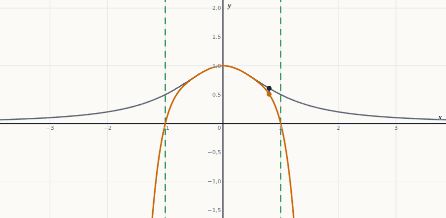

Módulo III · Aplicaciones de la derivada · Tema 3.2
Aplicaciones a series: series de Taylor y funciones analíticas
Qué ocurre cuando el polinomio de Taylor crece sin parar: una función se convierte en una «suma infinita» de potencias que se puede derivar sumando a sumando, y de la que se sacan desarrollos nuevos sin calcular derivadas.
Libro oficial: Cálculo para Ingenieros, §3.2 (pp. 113-119)Complementos: Stewart §11.10 (pp. 753-762); Larson §9.10 (pp. 664-669)Ejercicios: E Ej. 3.17 (radio), 3.18–3.20 (pp. 104-107); 3.15–3.16 fuera de examen⏱ ~4 h de estudio
U oficial
S Stewart
L Larson
E ejercicios
P propio
X exámenes
— pasa el ratón (o toca) por cada etiqueta para ver libro y página; en pantallas anchas aparecen en el margen derecho.
La idea del tema en una frase
En 3.1 aproximabas una función con un polinomio de grado $n$. Aquí te preguntas: ¿y si no paro nunca? Si sigues añadiendo términos $\frac{f^{(n}(x_0)}{n!}(x-x_0)^n$ para siempre, obtienes una serie de potencias. Para las funciones «buenas» (las analíticas: polinomios, $e^x$, $\operatorname{sen}x$, $\cos x$, $\ln$…) esa suma infinita vale exactamente la función dentro de su intervalo de convergencia. Como una serie de potencias se comporta como un «polinomio infinito», se puede derivar sumando a sumando y combinar con otras series: así se obtienen desarrollos nuevos sin derivar una y otra vez.
Si solo tienes un rato, llévate esto. El resto de la página lo desarrolla con ejemplos y ejercicios.
Método en 4 pasos
Identifica qué te piden: la serie de Taylor de una función, el radio o el intervalo de convergencia, la suma de una serie numérica, una derivada $f^{(n}(x_0)$ sin derivar, o un error con el resto de Lagrange.
Deja la serie en forma estándar: $\sum a_n(x-x_0)^n$. Si aparece $(2x-1)^n$, escríbelo como $2^n\left(x-\frac12\right)^n$: centro $\frac12$ y el $2^n$ pasa al coeficiente.
Elige la herramienta más corta: serie conocida con sustitución o derivación antes que derivar a mano; cociente si hay factoriales, raíz si el coeficiente es «algo elevado a $n$».
Cierra siempre: el radio no dice nada de los extremos $x_0\pm R$; se sustituyen y se estudian a mano (¿el término tiende a $0$?).
Qué hago según lo que piden
¿Serie de Taylor de $f$ en $x_0$? $\to$ ¿es una conocida disfrazada? Sustituyo; si no, derivo 3-4 veces sin simplificar, evalúo en $x_0$ y divido entre $n!$.
¿Radio, centro o intervalo? $\to$ forma estándar, cociente o raíz, $R=\frac1S$ y los dos extremos aparte.
¿Sumar una serie o desarrollar $(1-x)^{-2}$? $\to$ derivo (o multiplico por $x$) una serie conocida dentro de $(-R,R)$ y evalúo.
¿$f^{(n}(x_0)$ sin derivar? $\to$ $f^{(n}(x_0)=n!\cdot(\text{coeficiente de }(x-x_0)^n)$.
¿Error o número de términos? $\to$ resto de Lagrange $|R_n(x)|\le\frac{M}{(n+1)!}|x-x_0|^{n+1}$.
Fórmulas y enunciados, con su «cuándo se usa»
Fórmula o enunciado
Cuándo se usa
Serie de Taylor: $\displaystyle\sum_{n\ge0}\frac{f^{(n}(x_0)}{n!}(x-x_0)^n$
Desarrollar $f$ en un centro dado ($x_0=0$: Maclaurin).
$R=\dfrac1S$, con $S=\lim_{n\to\infty}\left|\dfrac{a_{n+1}}{a_n}\right|$ o $S=\lim_{n\to\infty}\sqrt[n]{|a_n|}$
Radio de convergencia (cociente con factoriales; raíz con potencias $n$ o $n^2$).
Extremos $x_0\pm R$: sustituir; si $a_n\not\to0$, diverge
Intervalo de convergencia completo.
$\left(\sum a_nx^n\right)'=\sum na_nx^{n-1}$, mismo radio, en $(-R,R)$
Obtener $(1-x)^{-2}$, sumar $\sum nx^{n-1}$ o $\sum\frac n{2^n}$.
$f^{(n}(x_0)=n!\,a_n$
Derivadas en el centro leídas de una serie.
$R_n(x)\to0\iff$ la serie suma $f(x)$
Analiticidad y aproximaciones con error.
Qué cae
En los exámenes resueltos: radio e intervalo de convergencia (5 de 8 preguntas), serie de Taylor de una función concreta (2 de 8) y reconocer una serie derivada (1 de 8). En el libro de ejercicios son E 3.17-3.20. Tabla completa por tipo: pestaña Examen.
U pp.116-119P
Camino de estudio: elige tu nivel
Empieza por «Mínimo»; luego «Completo» y, para nota alta, «Reto». Marca cada ejercicio al terminarlo.
Los apartados de serie de Taylor, radio, derivación de series y desarrollos nuevos (1-4) y el mapa de decisión (apartado 6).
Un ejercicio de cada tipo:
E 3.18 (derivar la geométrica), E 3.19 (serie de $e^x$), Examen 1 (radio), Examen 2 (centro $(2x-1)^n$), Examen 4 (extremos), Examen 6 (serie de $e^{\pi x}$), Examen 7 (Taylor y Lagrange) y P1 (intervalo completo).
Polinomio de Taylor, resto de Lagrange y desarrollos básicos de $e^x$, $\operatorname{sen}x$, $\cos x$ (tema 3.1). U pp.107-111
Series numéricas: la serie geométrica, la condición «si $\sum a_n$ converge, entonces $a_n\to0$», la armónica y el criterio de Leibniz (tema 1.3). U pp.36-41
Regla de la cadena y L'Hôpital (tema 2). U pp.79, 82
Qué entra en examen y qué no
Sí entra: series de Taylor y funciones analíticas (U §3.2.3, pp. 117-119); derivación término a término de series de potencias (U Prop. 3.3 y Teor. 3.1, p. 116), porque la usan E 3.18 y los exámenes; y el radio de convergencia. El criterio es el cronograma 2026-27. El radio viene de U §1.5 (pp. 67-70), cuyas series y sucesiones funcionales el cronograma excluye; pero el radio entra porque lo usan E 3.17-3.20 y el Tema 3 (series de Taylor), y además aparece en X (pp. 38, 46, 96, 99, 105, 112, 126). Se repasa en el apartado 2. No entra (va colapsado en «Fuera de examen»): convergencia uniforme y derivación de sucesiones y series de funciones (U §3.2.2, pp. 113-115) y los ejercicios E 3.15–3.16 (y la parte de convergencia uniforme de E 3.17). Las preguntas de X sobre convergencia uniforme son de U §1.5, excluida por el cronograma, y no se resuelven aquí.
La inclusión de la derivación de series de potencias como materia de examen es una decisión de este resumen (basada en E 3.18 y X p. 112); conviene confirmarla con el equipo docente.
Mapa del tema: qué se pide en los ejercicios y en el examen
(A) Calcular el radio (y el intervalo) de convergencia de una serie de potencias. (B) Derivar una serie conocida para obtener otra (E 3.18). (C) Escribir la serie de Taylor de una función en un centro dado: encontrar el patrón de las derivadas (E 3.19, 3.20, X pp.142, 145). (D) Usar el resto de Lagrange para calcular un valor con un error dado (X pp.145-146, tema 3.1).
1De polinomio a serie: la serie de Taylor U p.117
Lo que vas a aprender. a escribir la serie de Taylor de una función en un centro dado: derivar, evaluar en el centro, dividir entre $n!$ y reconocer el patrón.
Cómo lo reconoces: «serie de Taylor de $f$ en $x_0$», «desarrolla $f$ en potencias de $(x-x_0)$».
Qué haces: derivas 3 o 4 veces sin simplificar, evalúas en $x_0$, ves el patrón de $f^{(n}(x_0)$ y divides entre $n!$.
Ejemplo mínimo: $e^{2x}$ en $0$: $f^{(n}(0)=2^n$, serie $\sum\frac{2^n}{n!}x^n$.
Idea intuitiva
El polinomio de Taylor de orden $n$ copia a $f$ en $x_0$ hasta la derivada $n$. Cuanto mayor es $n$, más derivadas copia. Si le dejas crecer sin límite, queda una lista infinita de sumandos con exactamente las mismas fórmulas para los coeficientes. Es como seguir añadiendo decimales a $\pi$: cada aproximación mejora la anterior, y «la suma infinita» es el número exacto (si todo va bien).
U p.117
Definición · serie de Taylor
Sea $f$ una función con derivadas de todos los órdenes en $x_0$. Su serie de Taylor en $x_0$ es
$$\sum_{n=0}^{\infty}\frac{f^{(n}(x_0)}{n!}\,(x-x_0)^n=f(x_0)+f'(x_0)(x-x_0)+\frac{f''(x_0)}{2!}(x-x_0)^2+\cdots$$
Si $x_0=0$, se llama también serie de Maclaurin (S y L). «Es el resultado de hacer tender a infinito el orden del polinomio de Taylor.»
U p.117S p.754L p.665
Ejemplo 3.13 de U · la serie de $e^{2x}$ en $0$
Derivadas. $f(x)=e^{2x}$; cada derivada saca un factor $2$ (regla de la cadena): $f^{(n}(x)=2^ne^{2x}$. En $0$: $f^{(n}(0)=2^n$.
Radio. $\left|\dfrac{a_{n+1}}{a_n}\right|=\dfrac{2^{n+1}/(n+1)!}{2^n/n!}=\dfrac{2}{n+1}\to0$. Radio infinito: converge para todo $x$.
U p.117
Ejemplo 3.14 de U · la serie de $\cos x$ en $0$
Derivadas. $\cos,\ -\operatorname{sen},\ -\cos,\ \operatorname{sen},\ \cos,\dots$ (ciclo de 4). En $0$ valen $1,0,-1,0,1,0,\dots$: las derivadas impares se anulan.
Serie. Solo quedan potencias pares, con signo alternado:
$$\cos x\ \longleftrightarrow\ 1-\frac{x^2}{2!}+\frac{x^4}{4!}-\frac{x^6}{6!}+\cdots=\sum_{k=0}^{\infty}\frac{(-1)^k}{(2k)!}x^{2k}.$$
U p.117
El coseno y su polinomio de Taylor de grado 6 en $0$: se pegan cerca del origen y se separan al alejarse; con más sumandos el parecido llegaría más lejos. Pasa el ratón por la gráfica (o toca; o usa ← →) para leer las coordenadas. P
Error típico · «la serie converge» no significa «la serie suma $f$»
Hay tres preguntas distintas: (1) ¿cuál es la serie?, (2) ¿para qué $x$ converge?, (3) ¿su suma es $f(x)$? Las dos primeras son cálculo; la tercera es teoría. Larson lo advierte: calcular que la serie de $\operatorname{sen}x$ converge para todo $x$ no prueba que su suma sea $\operatorname{sen}x$; solo que converge «a alguna función». Se necesita que el resto $R_n(x)\to0$ cuando $n\to\infty$.
L p.666
Para $e^x$ se comprueba así: si $|x|\le d$, todas las derivadas valen como mucho $e^d$, y la cota de Taylor da $|R_n(x)|\le e^d\frac{|x|^{n+1}}{(n+1)!}\to0$, porque $\frac{x^n}{n!}\to0$ para todo $x$. Para las funciones de este curso se da por buena la conclusión (apartado 4).
S pp.756-757
Contraejemplo (propio). $g(x)=e^{-1/x^2}$ para $x\ne0$, $g(0)=0$, cumple $g^{(n}(0)=0$ para todo $n$: su serie en $0$ es $0+0x+0x^2+\cdots=0$, que converge siempre pero no suma $g$. Las funciones que sí igualan su serie son las analíticas.
P
2Radio de convergencia de una serie de potencias U pp.67-70
Lo que vas a aprender. a calcular el centro, el radio y el intervalo de convergencia de una serie de potencias con el cociente o la raíz, sin olvidar los dos extremos.
Cómo lo reconoces: «radio de convergencia», «intervalo de convergencia», «¿para qué $x$ converge?».
Qué haces: lees $x_0$ y $a_n$ en la forma $a_n(x-x_0)^n$; cociente (factoriales) o raíz (potencia $n$); $R=\frac1S$; y sustituyes $x_0\pm R$ para decidir cada extremo.
Una serie de potencias $\sum a_n(x-x_0)^n$ es, para cada $x$ fijo, una serie de números. Lo que cambia es el $x$. El resultado es siempre así: converge en un intervalo centrado en $x_0$ y diverge fuera de él. Es como el alcance de una linterna: dentro del círculo de luz hay convergencia, fuera no; el radio $R$ es el alcance. Justo en el borde ($x_0\pm R$) hay que mirar a mano.
U p.67
Cómo se calcula $R$
Sea $\sum a_n(x-x_0)^n$ (centro $x_0$).
Cociente: si $\displaystyle\lim_{n\to\infty}\left|\frac{a_{n+1}}{a_n}\right|=S$, entonces $R=\dfrac1S$ (con $R=\infty$ si $S=0$ y $R=0$ si $S=\infty$).
Raíz: lo mismo con $\displaystyle\lim_{n\to\infty}\sqrt[n]{|a_n|}=S$.
Antes de nada, deja la serie en la forma $a_n(x-x_0)^n$: si aparece $(2x-1)^n$, escribe $2^n\left(x-\frac12\right)^n$ (centro $\frac12$, el $2^n$ pasa al coeficiente; Examen 2). Cuál elegir. Si $a_n$ lleva factoriales o productos, el cociente (se simplifican). Si $a_n$ es «algo elevado a $n$» (o a $n^2$), la raíz. Intervalo de convergencia: $|x-x_0|<R$, más los extremos que converjan.
U p.70
Intervalo de convergencia de una serie de potencias (figura propia). P

Interactivo propio. La curva gris es $f$ y la naranja es la suma parcial $S_N$ (el polinomio de Taylor de grado $N$ en $0$). Las rectas verdes marcan $x=\pm R$. Sube $N$: dentro de $(-R,R)$ la naranja se pega a la gris; fuera, se separa cada vez más aunque $f$ sea perfectamente suave. Compruébalo con $\frac1{1+x^2}$, que está definida y es suave en todo $\mathbb R$ y aun así su serie solo converge en $|x|<1$ (el radio no llega «hasta donde está definida $f$»). Con $e^x$ y $\operatorname{sen}x$ el radio es infinito. P
Por qué $R=\frac1S$, con un ejemplo y el caso $R=0$
Por qué. Para un $x$ fijo, se aplica el criterio del cociente de series numéricas a $\sum|a_n||x-x_0|^n$: la razón de términos consecutivos es $\frac{|a_{n+1}|}{|a_n|}|x-x_0|\to S\,|x-x_0|$. Converge si $S|x-x_0|<1$, es decir, $|x-x_0|<\frac1S$, y diverge si $S|x-x_0|>1$.
Ejemplo mínimo. $\sum\frac{x^n}{2^n}$: la razón es $\frac{|x|^{n+1}/2^{n+1}}{|x|^n/2^n}=\frac{|x|}2$. Converge si $\frac{|x|}2<1$, o sea $|x|<2$; aquí $S=\frac12$ y $R=2$.
Caso $R=0$. $\sum n!\,x^n$ converge únicamente en $x=0$ (U Ej. 1.57, p. 68): para $x\ne0$ el término $n!\,|x|^n$ no tiende a $0$ (el cociente da $(n+1)|x|\to\infty$, es decir, $S=\infty$).
U p.68
Truco de examen · los extremos
En $x=x_0\pm R$ los criterios no deciden (el límite vale $1$). Se sustituye el valor y se estudia la serie numérica. Lo primero que se mira: ¿el término general tiende a $0$? Si no, diverge (U Prop. 1.6, p. 36). Si sí, hay que usar otro criterio: armónica (diverge), Leibniz (alternada con $|a_n|\downarrow0$ converge), etc. P1 tiene un extremo que converge y otro que no. Errores típicos: dar por convergente un extremo sin mirarlo, o creer que el radio llega hasta donde está definida $f$ (ver el interactivo).
U pp.36-41, 68-69
3Derivar una serie de potencias término a término U p.116
Lo que vas a aprender. a derivar una serie de potencias sumando a sumando, a reindexar y a saber en qué intervalo vale el resultado.
Cómo lo reconoces: «a partir de la geométrica, expresa $(1-x)^{-2}$», «suma $\sum nx^{n-1}$», «pista: deriva».
Qué haces: derivas los dos lados de una igualdad conocida: el exponente baja, la serie empieza en $n=1$, el radio no cambia y solo vale en $(-R,R)$.
Un polinomio se deriva sumando por sumando. Una serie de potencias es un «polinomio infinito», y dentro de su intervalo de convergencia se porta igual de bien: se deriva cada sumando y la nueva serie tiene el mismo radio. Esto es lo que permite obtener $\frac1{(1-x)^2}$ a partir de $\frac1{1-x}$ en un paso.
P
Proposición 3.3 y Teorema 3.1
Prop. 3.3. Si $f(x)=\sum_{n=0}^\infty a_nx^n$ para todo $x\in(-c,c)$, entonces $f$ es derivable en $(-c,c)$ y $f'(x)=\sum_{n=0}^\infty\frac{d}{dx}(a_nx^n)$. Teor. 3.1. Una serie de potencias define una función infinitamente derivable en su intervalo de convergencia, y sus derivadas se obtienen derivando término a término:
$$\frac{d^p}{dx^p}\left(\sum a_nx^n\right)=\sum\frac{d^p}{dx^p}(a_nx^n)\quad\text{para todo }p.$$
U p.116
Ejemplo 3.12 de U
Derivando $x-\frac{x^3}{3!}+\frac{x^5}{5!}-\cdots$ término a término sale $1-\frac{x^2}{2!}+\frac{x^4}{4!}-\cdots$: la derivada de la serie del seno es la serie del coseno.
U p.116
Derivar dentro del intervalo abierto $(-R,R)$
El Teor. 3.1 vale en el interior $(-R,R)$ del intervalo de convergencia (que puede incluir extremos, Ej. 1.60: $(-1,1]$); en un extremo la derivada puede dejar de converger: $\sum\frac{x^n}{n}$ converge en $x=-1$, pero su derivada $\sum x^{n-1}$ no. Deriva siempre dentro de $|x-x_0|<R$ y mira los extremos aparte.
U pp.116, 139
Autoevaluación de U (p. 139)
El punto 3 es falso: que $f_n\to f$ no obliga a que $f_n'\to f'$ (contraejemplo, U Ej. 3.11); el punto 4 es el aviso de arriba: derivar solo en $(-R,R)$.
U p.139
Errores típicos al derivar series
Escribir $\sum nx^n$: al derivar $x^n$ el exponente baja a $n-1$.
El primer sumando ($x^0=1$) es constante y su derivada es $0$: la serie derivada empieza en $n=1$.
Cambiar el índice sin cambiar la fórmula: $\sum_{n=1}nx^{n-1}=\sum_{n=0}(n+1)x^n$ y no $\sum_{n=0}nx^{n-1}$.
P
4Funciones analíticas y cómo fabricar series nuevas U pp.117-119
Lo que vas a aprender. a fabricar series nuevas sin derivar (sustituir, multiplicar por una potencia, derivar) y a pasar de coeficientes a derivadas en el centro.
Cómo lo reconoces: «desarrolla $x^2\cos x^3$», «calcula $f^{(8}(0)$ sin derivar», «¿suma la serie a $f$?».
Qué haces: sustituyes en una serie conocida, multiplicas por $x^k$ o derivas, y lees $f^{(n}(x_0)=n!\,a_n$ en la serie obtenida.
Ejemplo mínimo: $e^{x^2}=1+x^2+\frac{x^4}{2!}+\cdots$: el coeficiente de $x^4$ es $\frac12$, luego $f^{(4}(0)=4!\cdot\frac12=12$.
Función analítica
U (p. 117): «Lo más deseable es que la serie de Taylor converja uniformemente a la función que la define en un intervalo que contenga a $x_0$». Aquí, como la convergencia uniforme es material fuera de examen, basta pensar en que la serie converge a $f$ en cada punto de ese intervalo (simplificación nuestra). Las funciones para las que esto ocurre se llaman analíticas. Las funciones polinómicas, trigonométricas, exponenciales y logarítmicas son analíticas (en su dominio, cerca de cada punto).
U pp.117-118
Una serie de potencias es la serie de Taylor de su suma
Si $f(x)=\sum a_nx^n$ en un intervalo de convergencia (abierto), entonces
$$a_n=\frac{f^{(n}(0)}{n!}\qquad\Longleftrightarrow\qquad f^{(n}(0)=n!\,a_n.$$
Por qué: al derivar $n$ veces término a término (Teor. 3.1) y evaluar en $0$, solo sobrevive el sumando $a_nx^n$, que da $n!\,a_n$; los de grado menor se anulan antes y los de grado mayor conservan una potencia de $x$ que vale $0$. En consecuencia, los coeficientes de una serie de potencias son únicos: si por cualquier camino llegas a un desarrollo en potencias de $x$, ese es el desarrollo de Taylor.
U p.118S p.754L p.664
Qué ganas con esto
Derivar $n$ veces una función complicada es lento y propenso a errores. Si la función se puede construir con una serie conocida (sustituyendo, multiplicando por una potencia, derivando), lees los coeficientes sin derivar. Antes de derivar nada, pregúntate si la función es una serie conocida «disfrazada»: sustitución ($x\to x^3$, $x\to2x$), producto por una potencia, derivada de una conocida. Y de los coeficientes sacas las derivadas en el centro: $f^{(n}(x_0)=n!\cdot(\text{coeficiente de }(x-x_0)^n)$.
La binomial con $\alpha=-k$ es la del Ejercicio 3.20. La tabla completa con radios es la Tabla 1 de Stewart (p. 762).
Ejemplo 3.15 de U · desarrollar $x^2\cos x^3$ en potencias de $x$
Primera forma: sustituir. En $\cos t=1-\frac{t^2}{2!}+\frac{t^4}{4!}-\cdots$ ponemos $t=x^3$: $\cos x^3=1-\frac{x^6}{2!}+\frac{x^{12}}{4!}-\frac{x^{18}}{6!}+\cdots$
Multiplicar por $x^2$ (cada sumando): $\ x^2-\dfrac{x^8}{2!}+\dfrac{x^{14}}{4!}-\dfrac{x^{20}}{6!}+\cdots$, válido para todo $x$.
Segunda forma: derivar. $x^2\cos x^3=\dfrac{d}{dx}\left[\tfrac13\operatorname{sen}x^3\right]$. Se desarrolla $\tfrac13\operatorname{sen}x^3=\frac{x^3}{3}-\frac{x^9}{3\cdot3!}+\cdots$ y se deriva término a término: sale la misma serie.
U pp.118-119L p.668
5Fuera de examen: sucesiones y series de funciones U pp.113-115
Esta parte no cae en examen. Se deja aquí, cerrada, por si quieres entender de dónde viene la Prop. 3.3 o mirar los ejercicios del libro.
Fuera de examen: derivación de sucesiones y series de funciones (U §3.2.2, pp. 113-115)
Idea. Si una sucesión de funciones $f_n$ tiende a $f$, ¿se puede derivar «dentro del límite»? En general no: que $f_n\to f$ no obliga a que $f_n'\to f'$. Hace falta una convergencia más fuerte, la uniforme: $f_n\to f$ uniformemente en $I$ si $\lim_{n\to\infty}\sup_{x\in I}|f_n(x)-f(x)|=0$ (el error máximo, no punto a punto, tiende a $0$).
Proposición (p. 114). Sean $f_n$ derivables en un intervalo acotado $(a,b)$. Si $\{f_n'\}$ converge uniformemente en $(a,b)$ y existe $x_0\in(a,b)$ con $\{f_n(x_0)\}$ convergente, entonces $f_n\to f$ uniformemente, $f$ es derivable y $f'(x)=\lim_{n\to\infty}f_n'(x)$. La condición es suficiente, no necesaria. La versión para series es análoga (p. 115). U pp.114-115
Ejemplo 3.11. $f_n(x)=\frac{x}{1+n^2x^2}$ en $(-1,1)$ tiende a $0$ uniformemente (el máximo de $|f_n|$ es $\frac1{2n}$), pero $f_n'(0)=1$ para todo $n$, así que $f_n'\not\to f'=0$ en $x=0$: la convergencia de las $f_n$ no basta para derivar. U pp.114-115
La Prop. 3.3 del apartado 3 es el caso favorable: para series de potencias, dentro de $(-R,R)$ todo funciona.
Fuera de examen: E 3.15, 3.16 y parte de 3.17 (E pp. 100-104)
Ejercicio 3.15 E pp.100-102
Sea $f_n(x)=\sqrt{x^2+\frac1n}$. Calcula su límite. ¿Son derivables las $f_n$?, ¿y su límite? Comprueba que la sucesión converge uniformemente.
Límite puntual. Para $x$ fijo, $\frac1n\to0$: $f_n(x)\to\sqrt{x^2}=|x|$.
$f_n$ derivable. $x^2+\frac1n>0$ siempre, así que por la cadena $f_n'(x)=\frac{x}{\sqrt{x^2+1/n}}$ existe en todo $\mathbb R$.
El límite $|x|$ no es derivable en $0$ (derivadas laterales $-1$ y $1$).
Uniforme. Multiplicando por el conjugado: $0\le\sqrt{x^2+\frac1n}-|x|=\dfrac{1/n}{\sqrt{x^2+1/n}+|x|}\le\dfrac{1/n}{\sqrt{1/n}}=\dfrac1{\sqrt n}$, con igualdad en $x=0$. El supremo es $\frac1{\sqrt n}\to0$.
Por qué no contradice la proposición. $\{f_n'\}$ no converge uniformemente: en $x=\frac1{\sqrt n}$ vale $\frac1{\sqrt2}$ y su límite allí es $1$, así que el error máximo es $\ge1-\frac1{\sqrt2}$ siempre.
Receta: para el supremo de $|f_n-f|$, simplificar la diferencia (conjugado, cotas) antes de derivar; si sale una cota que tiende a $0$, es uniforme.
Ejercicio 3.16 E pp.102-104
Sea $f_n(x)=\operatorname{arctg}\frac xn$. Estudia: 1) convergencia puntual y uniforme de $\{f_n\}$ en $\mathbb R$; 2) de $\{f_n'\}$; 3) uniforme de $\{f_n\}$ en $[0,1]$.
Puntual: $\operatorname{arctg}\frac xn\to\operatorname{arctg}0=0$. Uniforme en $\mathbb R$: no. Para cada $n$, $\sup_x|\operatorname{arctg}\frac xn|=\frac\pi2\neq0$ (se acerca a $\frac\pi2$ cuando $x\to\infty$).
$f_n'(x)=\frac{n}{n^2+x^2}\to0$, y $0<f_n'(x)\le\frac1n\to0$: converge uniformemente a $0$ en $\mathbb R$.
En $[0,1]$ el arcotangente crece: el supremo está en $x=1$ y vale $\operatorname{arctg}\frac1n\to0$. Uniforme.
No contradice la proposición de U en 1)-2): $\mathbb R$ no es un intervalo acotado, que es una hipótesis. En $[0,1]$ todo encaja.
Receta: comprobar todas las hipótesis de un teorema (aquí, intervalo acotado). La misma sucesión puede converger uniformemente en un intervalo y no en otro.
Ejercicio 3.17 (sólo la parte de convergencia uniforme) E p.104
El enunciado recuerda que $\sum e^{-n}x^n$ converge absoluta y uniformemente en $[-k,k]$, $0<k<e$: eso es lo que queda fuera de examen. El cálculo del radio de la serie de derivadas es examen y se resuelve en el ejercicio 3.17 de la sección de ejercicios.
6Mapa de decisión: qué hago con una serie P
Lo que vas a aprender. qué herramienta usar (sustituir en una conocida, derivar, cociente o raíz, resto de Lagrange) en cuanto leas lo que te piden; mapa de decisión y, desplegable, tabla con el detalle.
Léelo de arriba abajo: en cada pregunta, «no» baja y «sí» te lleva a la acción de la derecha. Al final, antes de escribir, recuerda que el radio no dice nada de los extremos y que «la serie converge» no es «la serie suma $f$».
Ver la tabla con el detalle de cada caso
Piden…
Herramienta
Ojo con…
Serie de Taylor de $f$ en $x_0$
Sustituir en una serie conocida; o derivar, evaluar en $x_0$ y dividir entre $n!$
Evaluar en $x_0$ (no en $0$); no olvidar el $n!$
Radio de convergencia
Cociente (factoriales) o raíz (potencia $n$ o $n^2$): $R=\frac1S$
Dejar la serie en $a_n(x-x_0)^n$ antes
Intervalo de convergencia
Radio y después $x_0\pm R$ por separado
Si $a_n\not\to0$ en el extremo, diverge; si no, Leibniz o comparación
Suma de una serie numérica
Derivar (o multiplicar por $x$) una serie conocida y evaluar
El punto debe caer dentro de $(-R,R)$
$f^{(n}(x_0)$ sin derivar
$f^{(n}(x_0)=n!\,a_n$ con el desarrollo en potencias
La cota debe ser menor que la tolerancia; centrar donde las derivadas son exactas
¿La serie suma $f$?
$R_n(x)\to0$ (función analítica)
Converger no es sumar $f$ ($e^{-1/x^2}$)
Método en cinco pasos para el examen
Traduce lo que piden a una de las filas del mapa.
Pon la serie en forma estándar $\sum a_n(x-x_0)^n$ y escribe $x_0$ y $a_n$.
Aplica la herramienta (sustitución, derivación, cociente o raíz, Lagrange) y simplifica los factoriales.
Estudia los extremos si piden intervalo: primero, ¿el término general tiende a $0$?
Da la respuesta completa: serie, radio y, si procede, intervalo.
P
7Practica P
Lo que vas a aprender. a resolver tú solo un ejemplo de cada tipo. Intenta cada uno antes de abrir la pista; empieza por los ★ (los ★★ son ampliación).
Ahora hazlo tú
Antes de calcular, decide qué te piden: la serie (¿derivo y busco el patrón, o sustituyo en una conocida?), dónde converge (centro, radio con cociente o raíz y, siempre, los dos extremos aparte), una suma (¿de qué serie conocida es un valor?) o si la serie suma $f$ (resto de Lagrange $\to0$).
Serie de Taylor a partir de las derivadas (buscar el patrón)
★ Básico Práctica a1 · serie de Taylor de $\operatorname{sen}x$ en $\pi$ P
Calcula la serie de Taylor de $f(x)=\operatorname{sen}x$ centrada en $x_0=\pi$ y su radio de convergencia.
Pista
Las derivadas del seno se repiten cada cuatro: $\operatorname{sen},\cos,-\operatorname{sen},-\cos$. Evalúalas en $\pi$ (donde $\operatorname{sen}\pi=0$ y $\cos\pi=-1$): la mitad de los coeficientes se anulan.
Ver solución
Ciclo de derivadas: $f=\operatorname{sen}x$, $f'=\cos x$, $f''=-\operatorname{sen}x$, $f'''=-\cos x$, $f^{(4}=\operatorname{sen}x$, y vuelta a empezar.
En $\pi$: $f(\pi)=0$, $f'(\pi)=-1$, $f''(\pi)=0$, $f'''(\pi)=1$, $f^{(4}(\pi)=0$, $f^{(5}(\pi)=-1$… Las de orden par son $0$; las de orden impar valen $-1,1,-1,1,\dots$, es decir, $f^{(2n+1}(\pi)=(-1)^{n+1}$.
Serie (U §3.2.3, p.117: coeficiente $\frac{f^{(n}(x_0)}{n!}$): solo quedan potencias impares de $(x-\pi)$:
$$-(x-\pi)+\frac{(x-\pi)^3}{3!}-\frac{(x-\pi)^5}{5!}+\cdots=\sum_{n=0}^\infty\frac{(-1)^{n+1}}{(2n+1)!}(x-\pi)^{2n+1}.$$
Radio: con $t=(x-\pi)^2$ es la serie $\sum\frac{(-1)^{n+1}}{(2n+1)!}t^n$ multiplicada por $(x-\pi)$; el cociente $\frac{(2n+1)!}{(2n+3)!}=\frac1{(2n+2)(2n+3)}\to0$ (U p.70) da radio infinito en $t$, luego converge para todo $x$.
Comprobación: $\operatorname{sen}x=-\operatorname{sen}(x-\pi)$; sustituyendo $x-\pi$ en la serie del seno (U Ej. 3.12, p.116) sale lo mismo cambiado de signo.
Resultado: $\operatorname{sen}x=\sum_{n=0}^\infty\frac{(-1)^{n+1}}{(2n+1)!}(x-\pi)^{2n+1}$, con $R=\infty$
★★ Medio Práctica a2 · $\ln x$ en $x_0=1$: serie, radio e intervalo P
Calcula la serie de Taylor de $f(x)=\ln x$ centrada en $x_0=1$, su radio y su intervalo de convergencia.
Pista
Deriva cuatro o cinco veces sin simplificar los productos y fíjate en qué factor aparece cada vez. En los extremos del intervalo te quedarán la armónica y una alternada.
Ver solución
Derivadas: $f'=x^{-1}$, $f''=-x^{-2}$, $f'''=2x^{-3}$, $f^{(4}=-2\cdot3\,x^{-4}$, $f^{(5}=2\cdot3\cdot4\,x^{-5}$. Patrón: $f^{(n}(x)=(-1)^{n+1}(n-1)!\,x^{-n}$ para $n\ge1$.
En $1$: $f(1)=\ln1=0$ y $f^{(n}(1)=(-1)^{n+1}(n-1)!$.
Coeficientes (U §3.2.3, p.117): $a_n=\frac{(-1)^{n+1}(n-1)!}{n!}=\frac{(-1)^{n+1}}n$, porque $n!=n\,(n-1)!$. La serie es
$$\sum_{n=1}^\infty\frac{(-1)^{n+1}}{n}(x-1)^n=(x-1)-\frac{(x-1)^2}2+\frac{(x-1)^3}3-\cdots$$
Radio (cociente, U p.70): $\frac{1/(n+1)}{1/n}=\frac n{n+1}\to1$, luego $R=1$: converge si $|x-1|<1$, es decir, en $(0,2)$.
Extremo $x=2$: $\sum\frac{(-1)^{n+1}}n$, alternada con $\frac1n$ decreciente a $0$: converge (Leibniz, U p.41).
Extremo $x=0$: $\sum\frac{(-1)^{n+1}(-1)^n}n=-\sum\frac1n$: menos la armónica, diverge (U Ej. 1.35, p.37). Además $\ln0$ ni existe.
Resultado: $\ln x=\sum_{n=1}^\infty\frac{(-1)^{n+1}}{n}(x-1)^n$, con $R=1$ e intervalo de convergencia $(0,2]$
Serie de Taylor sin derivar: sustituir en una serie conocida
★ Básico Práctica b1 · $\frac1{2-x}$ como geométrica P
Desarrolla $f(x)=\dfrac1{2-x}$ en serie de potencias de $x$ y di para qué $x$ es válido el desarrollo.
Pista
Saca factor común $2$ en el denominador para que aparezca $\frac1{1-t}$ con $t=\frac x2$.
Ver solución
Forma geométrica: $\dfrac1{2-x}=\dfrac1{2\left(1-\frac x2\right)}=\dfrac12\cdot\dfrac1{1-\frac x2}$.
Geométrica (U Ej. 1.33, p.36): $\frac1{1-t}=\sum_{n\ge0}t^n$ si $|t|<1$. Con $t=\frac x2$:
$$\frac1{2-x}=\frac12\sum_{n=0}^\infty\frac{x^n}{2^n}=\sum_{n=0}^\infty\frac{x^n}{2^{n+1}}=\frac12+\frac x4+\frac{x^2}8+\cdots$$
Dónde vale: $\left|\frac x2\right|<1\iff|x|<2$. En $x=\pm2$ el término $\frac{(\pm2)^n}{2^{n+1}}=\frac{(\pm1)^n}2$ no tiende a $0$: diverge (U Prop. 1.6, p.36).
¿Es la de Taylor? Sí: una serie de potencias es la serie de Taylor de su suma (U p.118). Comprobación: $f(0)=\frac12$ y $f'(x)=(2-x)^{-2}$, $f'(0)=\frac14$, que coinciden con los dos primeros coeficientes.
Resultado: $\frac1{2-x}=\sum_{n=0}^\infty\frac{x^n}{2^{n+1}}$ para $|x|<2$ (intervalo $(-2,2)$)
★★ Medio Práctica b2 · $\operatorname{sen}^2x$ con una fórmula trigonométrica P
Desarrolla $f(x)=\operatorname{sen}^2x$ en serie de potencias de $x$ y calcula $f^{(4}(0)$ sin derivar.
Pista
Elevar al cuadrado una serie es incómodo. Usa $\operatorname{sen}^2x=\dfrac{1-\cos2x}{2}$ y sustituye $t=2x$ en la serie del coseno.
Ver solución
Coseno con $t=2x$ (U Ej. 3.14, p.117): $\cos2x=\sum_{n\ge0}\frac{(-1)^n2^{2n}x^{2n}}{(2n)!}=1-\frac{4x^2}{2!}+\frac{16x^4}{4!}-\cdots$, válido para todo $x$.
$1-\cos2x$: el $1$ se cancela con el sumando $n=0$, y los demás cambian de signo: $1-\cos2x=\sum_{n\ge1}\frac{(-1)^{n+1}2^{2n}x^{2n}}{(2n)!}$.
Dividir entre $2$:
$$\operatorname{sen}^2x=\sum_{n=1}^\infty\frac{(-1)^{n+1}2^{2n-1}}{(2n)!}x^{2n}=x^2-\frac{x^4}3+\frac{2x^6}{45}-\cdots$$
válido para todo $x$.
Derivada cuarta (U p.118: $f^{(n}(0)=n!\,a_n$): el coeficiente de $x^4$ es $-\frac{2^3}{4!}=-\frac13$, así que $f^{(4}(0)=4!\cdot\left(-\frac13\right)=-8$.
Comprobación rápida: el primer término es $x^2$, como debe ser, pues $\operatorname{sen}x\approx x$ cerca de $0$.
Resultado: $\operatorname{sen}^2x=\sum_{n=1}^\infty\frac{(-1)^{n+1}2^{2n-1}}{(2n)!}x^{2n}$ para todo $x$, y $f^{(4}(0)=-8$
Derivadas en el centro leídas de la serie
★ Básico Práctica c1 · $f^{(5}(0)$ y $f^{(6}(0)$ de $e^{x^2}$ P
Sea $f(x)=e^{x^2}$. Calcula $f^{(5}(0)$ y $f^{(6}(0)$ sin derivar.
Pista
Sustituye $t=x^2$ en $e^t=\sum\frac{t^n}{n!}$: solo aparecen potencias pares. Después usa $f^{(n}(0)=n!\cdot(\text{coeficiente de }x^n)$.
Ver solución
Serie: con $t=x^2$ en la serie de la exponencial (válida para todo $t$, E 3.19): $e^{x^2}=\sum_{n\ge0}\frac{x^{2n}}{n!}=1+x^2+\frac{x^4}{2!}+\frac{x^6}{3!}+\cdots$
Coeficientes que interesan: no hay término en $x^5$ (coeficiente $0$); el de $x^6$ es el sumando $n=3$: $\frac1{3!}=\frac16$.
Derivadas (U p.118, $f^{(n}(0)=n!\,a_n$): $f^{(5}(0)=5!\cdot0=0$ y $f^{(6}(0)=6!\cdot\frac16=\frac{720}6=120$.
Por qué funciona: la serie de potencias de $e^{x^2}$ es única; cualquier camino que lleve a una serie de potencias da la de Taylor (U p.118).
Resultado: $f^{(5}(0)=0$ y $f^{(6}(0)=120$
★★ Medio Práctica c2 · todas las derivadas de $x^3e^x$ en $0$ P
Sea $f(x)=x^3e^x$. Halla una fórmula para $f^{(n}(0)$ válida para todo $n\ge3$ y calcula $f^{(10}(0)$.
Pista
Multiplica cada sumando de la serie de $e^x$ por $x^3$ y cambia el índice para que la potencia sea $x^n$. ¿Qué vale el coeficiente de $x^n$?
Ver solución
Serie: $x^3e^x=x^3\sum_{m\ge0}\frac{x^m}{m!}=\sum_{m\ge0}\frac{x^{m+3}}{m!}$, válida para todo $x$.
Reindexar con $n=m+3$ (cuando $m=0$, $n=3$): $x^3e^x=\sum_{n\ge3}\frac{x^n}{(n-3)!}$. Los coeficientes de $x^0,x^1,x^2$ son $0$.
Derivadas (U p.118): $f^{(n}(0)=n!\cdot\frac1{(n-3)!}=n(n-1)(n-2)$ para $n\ge3$, porque $n!=n(n-1)(n-2)\,(n-3)!$. Y $f(0)=f'(0)=f''(0)=0$.
Caso $n=10$: $10\cdot9\cdot8=720$.
Control: $n=3$ da $3\cdot2\cdot1=6$; directamente, $f'''(0)=3!\cdot(\text{coef. de }x^3)=6\cdot1=6$.
Resultado: $f^{(n}(0)=n(n-1)(n-2)$ para $n\ge3$; $f^{(10}(0)=720$
Radio e intervalo de convergencia (con los extremos)
★ Básico Práctica d1 · $\sum\frac n{5^n}(x-1)^n$ P
Halla el centro, el radio y el intervalo de convergencia de $\displaystyle\sum_{n=1}^\infty\frac{n}{5^n}(x-1)^n$.
Pista
El centro se lee en $(x-x_0)^n$. Para el radio, cociente. En los extremos $x=1\pm R$ mira primero si el término general tiende a $0$.
Ver solución
Centro y coeficiente: $x_0=1$, $a_n=\frac n{5^n}$.
Cociente (U p.70): $\frac{a_{n+1}}{a_n}=\frac{(n+1)/5^{n+1}}{n/5^n}=\frac{n+1}{5n}\to\frac15$. Luego $R=5$: converge si $|x-1|<5$, es decir, en $(-4,6)$.
Extremo $x=6$: $\sum\frac n{5^n}5^n=\sum n$; el término $n$ no tiende a $0$: diverge (U Prop. 1.6, p.36).
Resultado: centro $1$, $R=5$, intervalo de convergencia $(-4,6)$
★★ Medio Práctica d2 · $\sum\frac{(-1)^n(x+1)^n}{\sqrt n\,3^n}$: un extremo sí y otro no P
Halla el centro, el radio y el intervalo de convergencia de $\displaystyle\sum_{n=1}^\infty\frac{(-1)^n(x+1)^n}{\sqrt n\;3^n}$.
Pista
Ojo con el centro: $x+1=x-(-1)$. Para el radio usa $|a_n|$ (el signo no influye). En un extremo saldrá una alternada (Leibniz) y en el otro $\sum\frac1{\sqrt n}$ (serie $\sum\frac1{n^\gamma}$ con $\gamma=\frac12$).
Ver solución
Centro y coeficiente: $x_0=-1$, $a_n=\frac{(-1)^n}{\sqrt n\,3^n}$.
Cociente (U p.70): $\left|\frac{a_{n+1}}{a_n}\right|=\frac{\sqrt n\,3^n}{\sqrt{n+1}\,3^{n+1}}=\frac13\sqrt{\frac n{n+1}}\to\frac13$. Luego $R=3$: converge en $|x+1|<3$, es decir, en $(-4,2)$.
Extremo $x=2$ ($x+1=3$): el término es $\frac{(-1)^n3^n}{\sqrt n\,3^n}=\frac{(-1)^n}{\sqrt n}$. Alternada, con $\frac1{\sqrt n}$ decreciente y con límite $0$: converge (Leibniz, U p.41).
Extremo $x=-4$ ($x+1=-3$): el término es $\frac{(-1)^n(-1)^n3^n}{\sqrt n\,3^n}=\frac1{\sqrt n}$, pues $(-1)^n(-1)^n=1$. La serie $\sum\frac1{n^\gamma}$ con $\gamma=\frac12\le1$ diverge (U p.38).
Intervalo: se añade $x=2$ y no $x=-4$.
Resultado: centro $-1$, $R=3$, intervalo de convergencia $(-4,2]$
¿Cociente o raíz? Elegir el criterio para el radio
★ Básico Práctica e1 · $\sum\frac{n^2}{n!}x^n$: factoriales, cociente P
Calcula el radio de convergencia de $\displaystyle\sum_{n=1}^\infty\frac{n^2}{n!}x^n$.
Pista
Hay un factorial: el cociente lo simplifica, porque $\frac{n!}{(n+1)!}=\frac1{n+1}$.
Ver solución
Criterio: $a_n=\frac{n^2}{n!}$ lleva factorial, así que cociente (U p.70).
Límite: el grado del denominador es mayor: $\frac{n+1}{n^2}\to0$.
Radio: $S=0$, luego $R=\infty$: converge para todo $x$ (no hay extremos que estudiar).
Resultado: $R=\infty$ (converge para todo $x\in\mathbb R$)
★★ Medio Práctica e2 · $\sum\left(\frac n{2n+1}\right)^nx^n$: potencia $n$, raíz P
Calcula el radio y el intervalo de convergencia de $\displaystyle\sum_{n=1}^\infty\left(\frac{n}{2n+1}\right)^nx^n$.
Pista
El coeficiente es «algo elevado a $n$»: criterio de la raíz. En los extremos aparece un $1^\infty$; escríbelo como $\left(1-\frac1{2n+1}\right)^n$ y relaciónalo con el número $e$.
Ver solución
Raíz (U p.70): $\sqrt[n]{a_n}=\frac n{2n+1}\to\frac12$. Luego $R=2$: converge en $(-2,2)$.
Extremo $x=2$: el término es $\left(\frac{2n}{2n+1}\right)^n=\left(1-\frac1{2n+1}\right)^n$. Es un $1^\infty$: con $m=2n+1$, $\left(1-\frac1m\right)^m\to e^{-1}$ y el exponente $n$ es casi $\frac m2$, así que el término tiende a $e^{-1/2}\approx0{,}607\ne0$ (U Prop. 1.5, p.31, para el límite de tipo $e$).
Diverge en $x=2$ porque el término general no tiende a $0$ (U Prop. 1.6, p.36).
Extremo $x=-2$: el término es $(-1)^n\left(\frac{2n}{2n+1}\right)^n$, cuyo valor absoluto tiende a $e^{-1/2}\ne0$: tampoco tiende a $0$, diverge.
Resultado: $R=2$, intervalo de convergencia $(-2,2)$
Sumar series derivando la geométrica
★ Básico Práctica f1 · $\sum\frac n{3^{n-1}}$ P
Calcula la suma de la serie $\displaystyle\sum_{n=1}^\infty\frac{n}{3^{n-1}}$.
Pista
$\frac n{3^{n-1}}=n\left(\frac13\right)^{n-1}$. ¿De qué serie de potencias es el valor en un punto? Recuerda E 3.18.
Ver solución
Reconocerla: $\sum_{n\ge1}n\left(\frac13\right)^{n-1}$ es $\sum_{n\ge1}nx^{n-1}$ en $x=\frac13$.
Fórmula: derivando la geométrica término a término (U Teor. 3.1, p.116; E 3.18), $\sum_{n\ge1}nx^{n-1}=\frac1{(1-x)^2}$ si $|x|<1$.
¿Se puede evaluar en $\frac13$? Sí: $\left|\frac13\right|<1$, está dentro del intervalo abierto.
★★ Medio Práctica f2 · $\sum\frac{n(n-1)}{2^n}$: derivar dos veces P
Calcula la suma de la serie $\displaystyle\sum_{n=2}^\infty\frac{n(n-1)}{2^n}$.
Pista
$n(n-1)x^{n-2}$ es la derivada segunda de $x^n$. Deriva dos veces $\sum x^n=\frac1{1-x}$, multiplica por $x^2$ y evalúa en $x=\frac12$.
Ver solución
Derivar dos veces (U Teor. 3.1, p.116, en $|x|<1$): $\left(\frac1{1-x}\right)''=\frac2{(1-x)^3}$, y por el lado de la serie $\sum_{n\ge0}(x^n)''=\sum_{n\ge2}n(n-1)x^{n-2}$ (los sumandos $1$ y $x$ desaparecen).
Igualdad: $\sum_{n\ge2}n(n-1)x^{n-2}=\frac2{(1-x)^3}$ para $|x|<1$.
Multiplicar por $x^2$ cada sumando: $\sum_{n\ge2}n(n-1)x^n=\frac{2x^2}{(1-x)^3}$.
Evaluar en $x=\frac12$ (dentro de $(-1,1)$): $\frac{2\cdot\frac14}{\left(\frac12\right)^3}=\frac{1/2}{1/8}=4$.
Control: los primeros términos son $\frac24+\frac68+\frac{12}{16}+\frac{20}{32}+\cdots=0{,}5+0{,}75+0{,}75+0{,}625+\cdots$, que va acercándose a $4$.
Analiticidad y resto: ¿la serie suma $f$? ¿cuántos términos?
★ Básico Práctica h1 · la serie del seno suma $\operatorname{sen}x$ P
Demuestra que $\operatorname{sen}x=\displaystyle\sum_{n=0}^\infty\frac{(-1)^n}{(2n+1)!}x^{2n+1}$ para todo $x\in\mathbb R$, usando el resto de Lagrange.
Pista
Basta probar que $R_n(x)\to0$ cuando $n\to\infty$ para cada $x$ fijo. Acota $|f^{(n+1}(c)|\le1$ y, para ver que $\frac{|x|^{n+1}}{(n+1)!}\to0$, recuerda que $\sum\frac{|x|^n}{n!}$ converge.
Ver solución
Qué hay que probar: la suma parcial hasta grado $n$ es el polinomio de Taylor $p_n(x)$, y $\operatorname{sen}x-p_n(x)=R_n(x)$. La serie suma $\operatorname{sen}x$ si y solo si $R_n(x)\to0$.
Resto de Lagrange (U Prop. 3.2, p.111): $R_n(x)=\frac{f^{(n+1}(c)}{(n+1)!}x^{n+1}$ con $c$ entre $0$ y $x$.
Cota: $f^{(n+1}$ es $\pm\operatorname{sen}$ o $\pm\cos$, así que $|f^{(n+1}(c)|\le1$ y $|R_n(x)|\le\frac{|x|^{n+1}}{(n+1)!}$.
Esa cota tiende a $0$: $\frac{|x|^{n+1}}{(n+1)!}$ es el término general de la serie de $e^{|x|}$, que converge para todo $x$ (radio infinito, E 3.19). Si una serie converge, su término tiende a $0$ (U Prop. 1.6, p.36).
Conclusión: $R_n(x)\to0$ para cada $x$, y la serie suma $\operatorname{sen}x$ en todo $\mathbb R$: el seno es analítica (U p.118).
Resultado: $|R_n(x)|\le\frac{|x|^{n+1}}{(n+1)!}\to0$ para todo $x$, luego la serie suma $\operatorname{sen}x$ en todo $\mathbb R$
★★ Medio Práctica h2 · $e$ con error $<0{,}001$ P
¿Cuántos términos de la serie $\sum\frac{x^n}{n!}$ hay que sumar, en $x=1$, para obtener $e$ con un error menor que $0{,}001$? Da la aproximación. (Usa $e<3$.)
Pista
Resto de Lagrange de $e^x$ en $0$ con $x=1$: $R_n(1)=\frac{e^c}{(n+1)!}$ con $0<c<1$. Acota $e^c<3$ y busca el primer $n$ con $\frac3{(n+1)!}<0{,}001$.
Ver solución
Resto (U Prop. 3.2, p.111): todas las derivadas de $e^x$ son $e^x$, así que $R_n(1)=\frac{e^c}{(n+1)!}\cdot1^{n+1}$ con $c\in(0,1)$.
Cota: $e^c<e^1<3$ (la exponencial es creciente), luego $0<R_n(1)<\frac3{(n+1)!}$.
Tabla: $n=5$: $\frac3{720}\approx0{,}0042$, no basta. $n=6$: $\frac3{5040}\approx0{,}0006<0{,}001$, sí.
Hacen falta $n=6$, es decir, los sumandos de $\frac1{0!}$ a $\frac1{6!}$ (siete términos):
$$p_6(1)=1+1+\frac12+\frac16+\frac1{24}+\frac1{120}+\frac1{720}=\frac{1957}{720}\approx2{,}71806.$$
Control: $e=2{,}718282\ldots$; el error real es $\approx0{,}00023$, menor que la cota $0{,}0006$.
Resultado: basta $n=6$ (siete términos): $e\approx\frac{1957}{720}\approx2{,}71806$, con error $<\frac3{7!}<0{,}001$
8Errores típicos y autoevaluación P
Lo que vas a aprender. a detectar tus fallos antes del examen: 10 preguntas rápidas; cada una es un error típico, con su explicación al responder.
1. (V/F) Si la serie de Taylor de $f$ en $0$ converge para todo $x$, entonces su suma es $f(x)$ para todo $x$.
Converger no es sumar $f$. $g(x)=e^{-1/x^2}$ ($g(0)=0$) tiene todas sus derivadas nulas en $0$: su serie es $0$, converge siempre y no vale $g(x)$ si $x\ne0$. Hace falta $R_n(x)\to0$ (funciones analíticas, U pp.117-118).
2. (Elige) Centro y radio de $\sum_{n\ge0}(3x+1)^n$:
$(3x+1)^n=3^n\left(x+\frac13\right)^n$: centro $-\frac13$ y $a_n=3^n$, cociente $3$, $R=\frac13$ (U p.70). Equivale a $|3x+1|<1$.
3. (V/F) Una serie de potencias de centro $x_0$ y radio $R$ converge siempre en $x=x_0+R$ y en $x=x_0-R$.
En los extremos puede pasar de todo: $\sum x^n$ diverge en $\pm1$; $\sum\frac{x^n}n$ converge en $-1$ y diverge en $1$; $\sum\frac{x^n}{n^2}$ converge en los dos. Se estudian a mano (U pp.36-41, 68-69).
4. (V/F) Como $\frac1{1+x^2}$ está definida y es derivable en todo $\mathbb R$, su serie de Taylor en $0$ converge en $x=2$.
Su serie es $\sum(-1)^nx^{2n}$ (geométrica de razón $-x^2$), que solo converge si $x^2<1$: radio $1$. En $x=2$ el término $4^n$ no tiende a $0$. El radio se calcula, no se deduce del dominio.
5. (Elige) El coeficiente de $x^6$ en la serie de $\cos2x$ en $0$ es:
Sustituyendo $t=2x$ en $\cos t$: el sumando $k=3$ es $\frac{(-1)^3(2x)^6}{6!}=-\frac{64}{720}x^6=-\frac4{45}x^6$ (U Ej. 3.14, p.117). La (a) olvida el $2^6$; la (d) es $f^{(6}(0)=6!\,a_6$, no el coeficiente.
6. (Elige) Si $f(x)=e^{x^3}$, entonces $f^{(6}(0)$ vale:
$e^{x^3}=1+x^3+\frac{x^6}{2}+\cdots$: el coeficiente de $x^6$ es $\frac12$ y $f^{(6}(0)=6!\cdot\frac12=360$ (U p.118). La (a) da el coeficiente, no la derivada.
7. (V/F) Si $\sum a_nx^n$ tiene radio $2$, la serie derivada $\sum na_nx^{n-1}$ también tiene radio $2$.
Derivar término a término conserva el radio (U Teor. 3.1, p.116). Lo que puede cambiar es el comportamiento en los extremos: se deriva en el abierto $(-2,2)$.
8. (Elige) $\displaystyle\sum_{n=0}^\infty\frac{(-1)^n}{(2n+1)!}$ es igual a:
Es $\sum\frac{(-1)^n}{(2n+1)!}x^{2n+1}$, la serie del seno (U Ej. 3.12, p.116), en $x=1$. El coseno lleva $(2n)!$; $e^{-1}$ lleva $n!$.
9. (V/F) El intervalo de convergencia de $\sum_{n\ge1}\frac{x^n}{n^2}$ es $(-1,1)$.
El radio es $1$, pero en $x=1$ queda $\sum\frac1{n^2}$, convergente ($\gamma=2>1$, U p.38), y en $x=-1$ converge absolutamente. El intervalo es $[-1,1]$.
10. (Elige) Para asegurar que la serie de Taylor de $f$ en $x_0$ suma $f(x)$ en un punto $x$, hay que comprobar que:
$f(x)-p_n(x)=R_n(x)$ (U Prop. 3.2, p.111): las sumas parciales tienden a $f(x)$ exactamente cuando el resto tiende a $0$. La (b) solo dice que converge a algo (pregunta 1).
9Ejercicios del libro, resueltos E pp.104-107
Los cuatro ejercicios de E de este tema (3.17-3.20) van en orden de fácil a difícil, conservando la numeración de E, y después cuatro ejemplos propios. Cada uno es una tarjeta: el enunciado se ve siempre; al abrir la solución encuentras «Antes de calcular» y la receta, y dentro el desarrollo paso a paso. Los ejercicios 3.15 y 3.16 (y la parte de convergencia uniforme de 3.17) están en el apartado 5 (fuera de examen).
Ver el orden recomendado, de fácil a difícil
Orden
Ejercicio
Tipo
Resultado
1
3.19
Serie de Taylor de $e^x$ y su derivada
$\sum\frac{x^n}{n!}$
2
3.18
$(1-x)^{-2}$ derivando la geométrica
$\sum(n+1)x^n$
3
3.17
Radio de la serie de derivadas
$R=e$
4
3.20
Serie de $(1+x)^{-k}$ y su radio
$\sum(-1)^n\binom{k+n-1}{n}x^n$, $R=1$
★ BásicoMínimoEjercicio 3.19 · serie de Taylor de $e^x$ y su derivadaE pp.105-106
Sea $f(x)=e^x$. Calcula su serie de Taylor centrada en $0$ y deriva término a término la serie resultante. Comprueba que la serie formada por estas derivadas coincide con la serie de Taylor.
Ver solución paso a paso
Antes de calcular
Qué me piden
La serie de Taylor de $e^x$ en $0$, su derivada término a término, y comprobar que coinciden.
Cómo lo pienso
Todas las derivadas de $e^x$ valen $e^x$, así que todos los coeficientes son $\frac1{n!}$. Al derivar $\frac{x^n}{n!}$ sale $\frac{x^{n-1}}{(n-1)!}$, el sumando anterior: la serie se «desplaza» y queda igual.
Qué uso
$a_n=\frac{f^{(n}(x_0)}{n!}$ (U p.117) y derivación término a término (U p.116) — ver teoría.
Por dónde empiezo
Calcular $f^{(n}(0)$ para varias $n$ y ver el patrón.
Receta: serie de Taylor de $f$ en $x_0$: (1) calcular unas cuantas $f^{(n}(x_0)$ y ver el patrón; (2) dividir entre $n!$; (3) radio por el cociente. Para derivar término a término: bajar el exponente, simplificar $\frac n{n!}=\frac1{(n-1)!}$ y reindexar.
Ver resolución completa paso a pasoLa exponencial y la suma de los cuatro primeros sumandos de su serie. Derivar el polinomio da otro polinomio que aproxima a la derivada, que es la propia $e^x$. Pasa el ratón por la gráfica (o toca; o usa ← →) para leer las coordenadas. P
Derivadas en $0$. $f^{(n}(x)=e^x$ para todo $n$, así que $f^{(n}(0)=1$.
Derivar. Se puede en todo $\mathbb R$ (Teor. 3.1). El sumando $n=0$ es la constante $1$: su derivada es $0$. Para $n\ge1$:
$$\left(\frac{x^n}{n!}\right)'=\frac{n\,x^{n-1}}{n!}=\frac{x^{n-1}}{(n-1)!},$$
porque $n!=n\cdot(n-1)!$ y se simplifica la $n$. Ejemplo con $n=3$: $\left(\frac{x^3}{6}\right)'=\frac{3x^2}{6}=\frac{x^2}{2!}$.
Serie derivada. $0+1+x+\frac{x^2}{2!}+\frac{x^3}{3!}+\cdots$. Con $m=n-1$ es $\sum_{m=0}^\infty\frac{x^m}{m!}$: la misma serie.
Interpretación. La suma $S(x)$ cumple $S'=S$ y $S(0)=1$, como $e^x$. Que la serie suma exactamente $e^x$ lo afirma U (p. 118: las exponenciales son analíticas) y se demuestra con el resto de Lagrange (S Ej. 2, p. 757).
Teoría: U §3.2.3 p. 117 (y el Ej. 3.13, que hace lo mismo con $e^{2x}$); Teor. 3.1 p. 116.
★★ MedioMínimoEjercicio 3.18 · $(1-x)^{-2}$ como serie, derivando la geométricaE pp.104-105
Sabemos que $\sum_{n=0}^{+\infty}x^n=\frac1{1-x}$ para $x\in(-1,1)$ por ser una serie geométrica. A partir de esta expresión, expresa $(1-x)^{-2}$ como una serie de potencias para $x\in(-1,1)$. Pista: calcula la derivada de $f(x)=\frac1{1-x}$.
Ver solución paso a paso
Antes de calcular
Qué me piden
Escribir $(1-x)^{-2}$ como serie de potencias en $(-1,1)$ a partir de la geométrica.
Cómo lo pienso
$(1-x)^{-2}$ es la derivada de $\frac1{1-x}$. Si derivo los dos lados de la igualdad conocida, a un lado queda lo que busco y al otro una serie.
Qué uso
$\frac1{1-x}=\sum x^n$ en $(-1,1)$ y $\left(\sum a_nx^n\right)'=\sum na_nx^{n-1}$ (U Teor. 3.1, p.116) — ver teoría.
Por dónde empiezo
Derivar $f(x)=\frac1{1-x}$ con la regla de la cadena y, aparte, derivar $\sum x^n$ sumando a sumando.
Receta: para desarrollar una función que es la derivada de otra con serie conocida: derivar la serie conocida término a término (U Teor. 3.1), recordar que el término constante desaparece (el índice sube en 1) y conservar el radio; después, mirar los extremos.
Ver resolución completa paso a pasoLa función $(1-x)^{-2}$ y la suma de los cinco primeros sumandos de su serie $\sum (n+1)x^n$: coinciden bien para $x$ cerca de $0$ y se separan al acercarse a $1$, donde la función se dispara. Pasa el ratón por la gráfica (o toca; o usa ← →) para leer las coordenadas. P
Lo que sabemos. $1+x+x^2+\cdots=\frac1{1-x}$ si $|x|<1$: serie de potencias con todos los $a_n=1$ y radio $1$ (U Ej. 1.33 p.36, Ej. 1.58 p.68).
¿Podemos derivar sumando a sumando? Sí: Prop. 3.3 (U p.116) con $c=1$.
Lado derecho. $f(x)=(1-x)^{-1}$; por la regla de la cadena $f'(x)=-(1-x)^{-2}\cdot(-1)=(1-x)^{-2}$. Es justo la función pedida.
Lado izquierdo. $(x^n)'=nx^{n-1}$. El sumando $x^0=1$ es constante y desaparece, así que la serie derivada empieza en $n=1$:
$$\frac1{(1-x)^2}=\sum_{n=1}^\infty nx^{n-1}=1+2x+3x^2+4x^3+\cdots$$
Reindexar (opcional). Con $m=n-1$ (cuando $n=1$, $m=0$):
$$\boxed{\frac1{(1-x)^2}=\sum_{m=0}^{\infty}(m+1)x^m,\qquad x\in(-1,1).}$$
¿Dónde vale? El Teor. 3.1 garantiza el mismo radio $1$ (también sale con el cociente: $\frac{m+2}{m+1}\to1$). En $x=\pm1$ el término $(m+1)(\pm1)^m$ no tiende a $0$: diverge. Vale exactamente en $(-1,1)$.
Comprobación numérica. En $x=\frac12$: $\frac1{(1/2)^2}=4$, y la serie es $1+1+\frac34+\frac12+\frac5{16}+\cdots$, que suma $4$.
Teoría:apartado 3 (U Prop. 3.3 y Teor. 3.1, p. 116).
★★ MedioEjercicio 3.17 · radio de la serie de las derivadas de $\sum e^{-n}x^n$E p.104
Sea $f_n(x)=e^{-n}x^n$, $n\ge1$ (serie absoluta y uniformemente convergente en $[-k,k]$, $0<k<e$; esa parte es fuera de examen). Construye $\sum f_n'(x)$ y calcula su radio de convergencia.
Ver solución paso a paso
Antes de calcular
Qué me piden
El radio de convergencia de la serie formada por las derivadas $f_n'$ de los sumandos de $\sum e^{-n}x^n$.
Cómo lo pienso
Derivar sumando a sumando no cambia el «tamaño» de la zona donde la serie converge: la serie de derivadas debe tener el mismo radio que la original, que es una geométrica disfrazada.
Qué uso
Derivar sumando a sumando conserva el radio (U Teor. 3.1, p.116) y $R=\frac1S$ por el cociente (U p.70) — ver teoría.
Por dónde empiezo
Derivar $e^{-n}x^n$ con la regla de la potencia y escribir la serie resultante.
Receta: la serie de las derivadas tiene el mismo radio que la original.
Ver resolución completa paso a paso
$f_n'(x)=ne^{-n}x^{n-1}$. La serie es $\sum_{n=1}^\infty ne^{-n}x^{n-1}=\sum_{n=0}^\infty(n+1)e^{-(n+1)}x^n$ (reindexando).
Radio, por el cociente: $\dfrac{(n+2)e^{-(n+2)}}{(n+1)e^{-(n+1)}}=\dfrac{n+2}{(n+1)e}\to\dfrac1e$, luego $R=e$.
Atajo: la serie original es la geométrica $\sum\left(\frac xe\right)^n$, de radio $e$, y por el Teor. 3.1 la derivada conserva el radio.
★★★ DifícilEjercicio 3.20 · serie de Taylor de $(1+x)^{-k}$ y su radioE pp.106-107
Sea $f(x)=\dfrac1{(1+x)^k}$ para $x>-1$, con $k\in\mathbb N$, $k>0$. Obtén su desarrollo en serie de Taylor centrado en $x_0=0$ y su radio de convergencia. Nota: $f^{(n}(x)=(-1)^n\dfrac{(k+n-1)!}{(k-1)!\,(1+x)^{k+n}}$.
Ver solución paso a paso
Antes de calcular
Qué me piden
El desarrollo en serie de Taylor de $\frac1{(1+x)^k}$ en $x_0=0$ y su radio de convergencia.
Cómo lo pienso
Cada derivada baja el exponente en $1$ y saca un factor nuevo (con signo menos). En $x=0$ el denominador vale $1$ y sólo queda un producto de factores; al dividir entre $n!$ sale un número combinatorio.
Qué uso
$a_n=\frac{f^{(n}(0)}{n!}$ (U p.117) y $R=\frac1S$ por el cociente (U p.70) — ver teoría.
Por dónde empiezo
Derivar tres o cuatro veces sin simplificar y evaluar en $0$.
Receta: para potencias $(1+x)^{-k}$: derivar 3 o 4 veces sin simplificar los productos, ver qué factor se añade cada vez, evaluar en $x_0$ y dividir entre $n!$. El radio, por el cociente, simplificando los productos que «telescopan».
Ver resolución completa paso a pasoCaso $k=2$: la función $(1+x)^{-2}$ y los cinco primeros sumandos de su serie. El ajuste es bueno dentro de $(-1,1)$ y se pierde fuera de ese intervalo (radio $1$). Pasa el ratón por la gráfica (o toca; o usa ← →) para leer las coordenadas. P
Coeficientes (dividir entre $n!$): $a_n=(-1)^n\dfrac{(k+n-1)!}{(k-1)!\,n!}=(-1)^n\dbinom{k+n-1}{n}$. Con $k=3$: $1,-3,6,-10,\dots$
La serie.
$$\boxed{\begin{aligned}\frac1{(1+x)^k}&=\sum_{n=0}^\infty(-1)^n\binom{k+n-1}{n}x^n\\&=1-kx+\frac{k(k+1)}{2!}x^2-\frac{k(k+1)(k+2)}{3!}x^3+\cdots\end{aligned}}$$
Radio, por el cociente.
$$\left|\frac{a_{n+1}}{a_n}\right|=\frac{k(k+1)\cdots(k+n)}{(n+1)!}\cdot\frac{n!}{k(k+1)\cdots(k+n-1)}=\frac{k+n}{n+1}\xrightarrow[n\to\infty]{}1.$$
Todo se simplifica salvo el último factor de arriba ($k+n$) y el último de abajo ($n+1$). Luego $R=1$.
Extremos. Como $\binom{k+n-1}{n}\ge1$, en $x=\pm1$ el término general no tiende a $0$: diverge. Intervalo de convergencia: $(-1,1)$.
¿La serie suma $f$? Sí, en $(-1,1)$. Para $k=1$ es la geométrica de razón $-x$: $\frac1{1+x}=\sum(-x)^n$. Derivando $k-1$ veces término a término (Teor. 3.1) y dividiendo entre $(-1)^{k-1}(k-1)!$ sale la de cada $k$, porque $\frac{d^{k-1}}{dx^{k-1}}\frac1{1+x}=\frac{(-1)^{k-1}(k-1)!}{(1+x)^k}$. Por ejemplo $k=2$: $\frac1{(1+x)^2}=1-2x+3x^2-\cdots$ Así $f$ es analítica en $(-1,1)$.
Error típico: pensar que el radio llega «hasta donde está definida $f$». $f$ existe en $(-1,\infty)$, pero la serie sólo converge en $(-1,1)$: en $x=2$, $f(2)=3^{-k}$ y la serie diverge. Aquí coincide con la distancia a $x=-1$, pero no es una regla ($\frac1{1+x^2}$, del interactivo, tiene $R=1$ siendo suave en todo $\mathbb R$): el radio se calcula con cociente o raíz.
Teoría: U §3.2.3 p. 117; criterio del cociente U p. 70; Teor. 3.1 p. 116. La fórmula general $(1+x)^\alpha=\sum\binom{\alpha}{n}x^n$ es la serie binomial de S Teor. 17 p. 761, con $\alpha=-k$ y $\binom{-k}{n}=(-1)^n\binom{k+n-1}{n}$.
Ejemplos propios (de fácil a difícil)
★ BásicoP2 · serie de Taylor de $e^{2x}$ en $x_0=1$P
Calcula la serie de Taylor de $f(x)=e^{2x}$ centrada en $x_0=1$ y su radio de convergencia.
Ver solución paso a paso
Antes de calcular
Qué me piden
La serie de Taylor de $e^{2x}$ centrada en $x_0=1$.
Cómo lo pienso
Cambiar el centro sólo cambia dónde se evalúan las derivadas; las derivadas de $e^{2x}$ siguen la misma regla.
Qué uso
$a_n=\frac{f^{(n}(1)}{n!}$ con $f^{(n}(1)=2^ne^2$ (U Ej. 3.13, p.117) — ver teoría.
Por dónde empiezo
Escribir $f^{(n}(x)=2^ne^{2x}$ y evaluar en $x=1$.
Receta: cambiar de centro sólo cambia dónde se evalúan las derivadas; a veces basta factorizar y sustituir en una serie conocida.
Ver resolución completa paso a pasoLa curva $e^{2x}$ y el polinomio de Taylor de grado $3$ centrado en $x_0=1$: se tocan en $(1,e^2)$ y se separan al alejarse de ese punto. Pasa el ratón por la gráfica (o toca; o usa ← →) para leer las coordenadas. P
$f^{(n}(x)=2^ne^{2x}$ (U Ej. 3.13), así que $f^{(n}(1)=2^ne^2$.
Comprobación sin derivar: $e^{2x}=e^2\cdot e^{2(x-1)}$; se sustituye $t=2(x-1)$ en $e^t=\sum\frac{t^n}{n!}$.
★★ MedioMínimoP1 · centro, radio e intervalo de $\sum\frac{(x-3)^n}{n\,2^n}$P
Calcula el centro, el radio y el intervalo de convergencia de $\displaystyle\sum_{n=1}^\infty\frac{(x-3)^n}{n\,2^n}$.
Ver solución paso a paso
Antes de calcular
Qué me piden
Centro, radio e intervalo de convergencia de $\sum\frac{(x-3)^n}{n\,2^n}$.
Cómo lo pienso
Una serie de potencias converge en un intervalo centrado en $x_0$; el radio dice hasta dónde, pero los dos extremos hay que mirarlos a mano.
Qué uso
Cociente (U p.70), armónica (U Ej. 1.35, p.37) y Leibniz (U p.41) — ver teoría.
Por dónde empiezo
Leer el centro $x_0=3$ y el coeficiente $a_n=\frac1{n2^n}$.
Receta: los dos extremos se estudian por separado; pueden comportarse distinto.
Ver resolución completa paso a paso
Centro $x_0=3$; coeficientes $a_n=\frac1{n2^n}$.
Cociente. $\frac{a_{n+1}}{a_n}=\frac{n\,2^n}{(n+1)2^{n+1}}=\frac{n}{2(n+1)}\to\frac12$. Luego $R=2$ y converge en $(1,5)$.
Extremo $x=5$. $\sum\frac{2^n}{n2^n}=\sum\frac1n$: armónica, diverge (U Ej. 1.35 p.37).
Extremo $x=1$. $\sum\frac{(-2)^n}{n2^n}=\sum\frac{(-1)^n}{n}$: alternada con $\frac1n$ decreciente a $0$; converge por Leibniz (U p.41).
Intervalo de convergencia: $[1,5)$.
★★ MedioP3 · $x^2\cos x^3$ y sus derivadas en $0$ sin derivarP
Desarrolla $f(x)=x^2\cos x^3$ en serie de potencias y calcula $f^{(8}(0)$ y $f^{(9}(0)$ sin derivar.
Ver solución paso a paso
Antes de calcular
Qué me piden
El desarrollo de $x^2\cos x^3$ en potencias de $x$ y los valores $f^{(8}(0)$ y $f^{(9}(0)$ sin derivar.
Cómo lo pienso
En vez de derivar, parto de una serie conocida: sustituyo $x^3$ en el coseno y multiplico por $x^2$. En la serie, el coeficiente de $x^n$ ya contiene la derivada $n$-ésima.
Qué uso
$f^{(n}(0)=n!\,a_n$ (U p.118) y sustitución en el coseno (U Ej. 3.15, pp.118-119) — ver teoría.
Por dónde empiezo
Sustituir $t=x^3$ en $\cos t=\sum\frac{(-1)^k}{(2k)!}t^{2k}$.
Receta: sustituir en una serie conocida es mucho más rápido que derivar, y la serie da todas las derivadas en el centro: $f^{(n}(x_0)=n!\cdot(\text{coeficiente de }(x-x_0)^n)$.
Ver resolución completa paso a pasoLa función $x^2\cos x^3$ y los tres primeros sumandos de su desarrollo; el polinomio es par, como la función, y las dos curvas casi se confunden cerca del origen. Pasa el ratón por la gráfica (o toca; o usa ← →) para leer las coordenadas. P
Serie (sustituir $t=x^3$ en el coseno y multiplicar por $x^2$, como en U Ej. 3.15, apartado 4): $f(x)=x^2-\frac{x^8}{2}+\frac{x^{14}}{24}-\frac{x^{20}}{720}+\cdots=\sum_{k\ge0}\frac{(-1)^k}{(2k)!}x^{6k+2}$, válido en todo $\mathbb R$.
Derivadas en $0$: como $a_n=\frac{f^{(n}(0)}{n!}$, entonces $f^{(n}(0)=n!\,a_n$. El coeficiente de $x^8$ es $-\frac12$, luego $f^{(8}(0)=-\frac{8!}{2}=-20160$. No hay término en $x^9$, luego $f^{(9}(0)=0$.
Otro valor: $f^{(14}(0)=\frac{14!}{24}$.
★★★ DifícilP4 · sumar una serie y demostrar el desarrollo de $\ln(1+x)$ derivandoP
(a) Calcula $\sum_{n=1}^\infty\frac n{2^n}$. (b) Demuestra que $\ln(1+x)=\sum_{n=1}^\infty\frac{(-1)^{n+1}}{n}x^n$ para $x\in(-1,1)$ usando sólo derivación de series.
Ver solución paso a paso
Antes de calcular
Qué me piden
(a) La suma de $\sum\frac n{2^n}$. (b) Probar que $\ln(1+x)=\sum\frac{(-1)^{n+1}}{n}x^n$ en $(-1,1)$ derivando series.
Cómo lo pienso
(a) Es la serie de E 3.18 evaluada en un punto, tras multiplicar por $x$. (b) Si dos funciones tienen la misma derivada y el mismo valor en un punto, son la misma función.
Qué uso
Derivar término a término (U Teor. 3.1, p.116) y $f'=0\Rightarrow f$ constante (U Teor. 2.4, p.97) — ver teoría.
Por dónde empiezo
(a) Partir de $\sum nx^{n-1}=\frac1{(1-x)^2}$. (b) Derivar la serie propuesta.
Receta: para «sumar» una serie, buscar una serie conocida cuya derivada (o $x$ por ella) sea la dada. Para demostrar un desarrollo: misma derivada y mismo valor en el centro implican misma función. (Integrar término a término es el camino directo; aparece en el Tema 6: Prop. 6.1, p. 280.)
Ver resolución completa paso a pasoLa función $\ln(1+x)$ y los cuatro primeros sumandos de su serie: se parecen en $(-1,1)$, sobre todo cerca de $0$; hacia $x=-1$ la función cae a $-\infty$ y el polinomio no la sigue. Pasa el ratón por la gráfica (o toca; o usa ← →) para leer las coordenadas. P
(a)
Por E 3.18, $\sum_{n\ge1}nx^{n-1}=\frac1{(1-x)^2}$ para $|x|<1$.
Multiplicando cada sumando por $x$: $\sum_{n\ge1}nx^n=\frac{x}{(1-x)^2}$.
Como $x=\frac12\in(-1,1)$: $\sum\frac n{2^n}=\frac{1/2}{1/4}=2$. (Repitiendo el truco, $\sum\frac{n^2}{2^n}=6$.)
(b)
Sea $S(x)=\sum_{n\ge1}\frac{(-1)^{n+1}}{n}x^n$. Radio: $\frac n{n+1}\to1$, luego $R=1$.
Derivamos término a término (Teor. 3.1): $S'(x)=\sum_{n\ge1}(-1)^{n+1}x^{n-1}=1-x+x^2-\cdots=\frac1{1+x}$ (geométrica de razón $-x$).
La función $g(x)=\ln(1+x)$ también cumple $g'(x)=\frac1{1+x}$.
Misma derivada $\Rightarrow$ difieren en una constante: $h=S-g$ tiene $h'=0$ en $(-1,1)$, luego es constante (U Teor. 2.4, p. 97).
Esa constante es $0$: $h(0)=S(0)-\ln1=0$. Por tanto $S(x)=\ln(1+x)$ en $(-1,1)$.
Uso: con $x=\frac12$ y 5 términos, $\ln\frac32\approx0{,}40729$ (valor real $0{,}405465$).
10Así lo preguntan en el examen X exámenes
Qué cae en el examen de este tema
En los exámenes resueltos hay 8 preguntas de este tema (todas se resuelven aquí abajo con su redacción) y 4 ejercicios en el libro E. Se reparten en 3 tipos:
Tipo de pregunta
Receta en una línea
Libro E
Examen
Radio, centro e intervalo de convergencia (5 de 8)
Forma estándar $a_n(x-x_0)^n$; cociente (factoriales) o raíz (potencia $n$); $R=\frac1S$; después los dos extremos.
Recuento propio sobre las preguntas de X resueltas aquí. El resto de Lagrange sin series (X de Taylor) está en el tema 3.1; las preguntas de convergencia uniforme de X (pp. 22, 26, 74, 115-116, 135, 142, 144) son de U §1.5, excluida por el cronograma 2026-27, y no se resuelven aquí.
P
Estos son los tipos reales que caen de este tema en los exámenes resueltos de la UNED (X = Exámenes resueltos de Cálculo; página del PDF). Casi todo lo que se pregunta es el radio de convergencia o la serie de Taylor de una función concreta. Intenta cada uno antes de abrir la solución; van de fácil a difícil. Algunos encabezados de X no traen fecha (se indica «sin fecha»).
★ BásicoMínimoExamen 1 · Sep. 2014 y Sep. 2018 · radio de $\sum\frac{x^n}{2^n}$ y de $\sum\frac{x^n}{3^n}$X pp.46, 96
Calcúlese el radio de convergencia de la serie de potencias $\sum_{n=0}^\infty\frac{x^n}{2^n}$. (X p.96: lo mismo con $\frac{x^n}{3^n}$.)
Ver solución paso a paso
Antes de calcular
Qué me piden
El radio de convergencia de $\sum\frac{x^n}{2^n}$ (y de $\sum\frac{x^n}{3^n}$).
Cómo lo pienso
$\frac{x^n}{2^n}=\left(\frac x2\right)^n$ es una geométrica: converge si $\left|\frac x2\right|<1$, es decir, $|x|<2$.
Qué uso
$R=\frac1S$ con $S=\lim_{n\to\infty}\left|\frac{a_{n+1}}{a_n}\right|$ (U p.70) — ver teoría.
Por dónde empiezo
Identificar el coeficiente $a_n=\frac1{2^n}$.
✍️ Así se redacta en el examen
Coeficiente. $a_n=\frac1{2^n}$.
Cociente. $\left|\frac{a_{n+1}}{a_n}\right|=\frac{2^n}{2^{n+1}}=\frac12$, que tiene límite $\frac12$.
Radio. $R=\frac1{1/2}=2$. (Con $\frac{x^n}{3^n}$ el mismo cálculo da $R=3$.)
Receta: si $a_n=\frac1{b^n}$, entonces $R=b$: se reconoce la geométrica $\left(\frac xb\right)^n$.
Teoría: X pp.46, 96
Comentarios y comprobaciones
Coeficiente: $a_n=\frac1{2^n}$.
Cociente: $\frac{a_{n+1}}{a_n}=\frac{2^n}{2^{n+1}}=\frac12$, y su límite es $\frac12$.
★★ MedioMínimoExamen 2 · centro, radio e intervalo de $\sum\frac{(2x-1)^n}{n!}$X p.99
Calcule el centro, radio de convergencia e intervalo de convergencia de $\sum_{n=1}^\infty\frac{(2x-1)^n}{n!}$.
Ver solución paso a paso
Antes de calcular
Qué me piden
Centro, radio e intervalo de convergencia de $\sum\frac{(2x-1)^n}{n!}$.
Cómo lo pienso
El centro y los coeficientes sólo se leen cuando la serie está escrita como $\sum a_n(x-x_0)^n$; aquí hay un $2$ dentro de la potencia que hay que sacar antes.
Qué uso
$(bx-c)^n=b^n\left(x-\frac cb\right)^n$ para leer el centro, y $R=\frac1S$ (U p.70) — ver teoría.
Por dónde empiezo
Escribir $2x-1=2\left(x-\frac12\right)$ y pasar el $2^n$ al coeficiente.
✍️ Así se redacta en el examen
Forma estándar. Como $2x-1=2\left(x-\frac12\right)$, la serie es $\displaystyle\sum_{n=1}^\infty\frac{2^n}{n!}\left(x-\frac12\right)^n$: es una serie de potencias de centro $x_0=\frac12$ y coeficiente $a_n=\frac{2^n}{n!}$.
Radio e intervalo. $R=\infty$; la serie converge en todo $\mathbb R$ (no hay extremos).
Receta: si aparece $(bx-c)^n$, escribir $b^n\left(x-\frac cb\right)^n$: centro $\frac cb$, y el $b^n$ pasa al coeficiente.
Teoría: X p.99
Comentarios y comprobaciones
Forma estándar. $2x-1=2\left(x-\frac12\right)$, así que $(2x-1)^n=2^n\left(x-\frac12\right)^n$. La serie es $\sum\frac{2^n}{n!}\left(x-\frac12\right)^n$.
Radio $R=\infty$; intervalo de convergencia: todo $\mathbb R$ (no hay extremos).
Error típico: tomar centro $1$, o leer $a_n=\frac1{n!}$ olvidando el $2^n$. Aquí no cambia el radio, pero en $\sum(2x-1)^n$ el radio sería $\frac12$, no $1$.
★★★ DifícilExamen 3 · radio de $\sum\left(1+\frac1n\right)^{2n^2}x^n$X p.126
Calcule el radio de convergencia de $\sum_{n=1}^\infty\left(1+\frac1n\right)^{2n^2}x^n$.
Ver solución paso a paso
Antes de calcular
Qué me piden
El radio de convergencia de $\sum\left(1+\frac1n\right)^{2n^2}x^n$.
Cómo lo pienso
El coeficiente es «algo elevado a $n^2$»: la raíz $n$-ésima lo baja a «algo elevado a $n$», que es el límite que define el número $e$.
Qué uso
$R=\frac1S$ con $S=\lim_{n\to\infty}\sqrt[n]{|a_n|}$ (U p.70) y $\left(1+\frac1n\right)^n\to e$ (U Prop. 1.5, p.31) — ver teoría.
Por dónde empiezo
Calcular $\sqrt[n]{a_n}$ y reconocer $\left[\left(1+\frac1n\right)^n\right]^2$.
✍️ Así se redacta en el examen
Criterio. El coeficiente es $a_n=\left(1+\frac1n\right)^{2n^2}$, con exponente en $n^2$: se usa la raíz.
Raíz. $\sqrt[n]{a_n}=\left(1+\frac1n\right)^{2n}=\left[\left(1+\frac1n\right)^n\right]^2\to e^2$, porque $\left(1+\frac1n\right)^n\to e$.
Radio. $R=\frac1{e^2}$.
Receta: coeficientes con potencia $n$ o $n^2$, criterio de la raíz; si sale $1^\infty$, usar $\left(1+\frac1{a_n}\right)^{a_n}\to e$.
Límite. $\left(1+\frac1n\right)^n\to e$ (U Prop. 1.5, p. 31), luego el límite es $e^2$.
Radio: $R=\frac1{e^2}$.
Error típico: «$1+\frac1n\to1$ y $1^{\text{lo que sea}}=1$», lo que daría $R=1$. Es una indeterminación $1^\infty$.
★★ MedioMínimoExamen 4 · $\sum\ln(n+1)(x+1)^n$: centro, intervalo y extremosX p.105
Dada la serie de funciones $\sum_{n=0}^\infty\ln(n+1)(x+1)^n$: discuta si es una serie de potencias y, en caso afirmativo, indique su centro; estudie si existe un intervalo en el que la serie es convergente; estudie si para $x=-2$ y $x=0$ las series numéricas asociadas son convergentes.
Ver solución paso a paso
Antes de calcular
Qué me piden
Decidir si $\sum\ln(n+1)(x+1)^n$ es de potencias, su centro, un intervalo de convergencia y qué pasa en $x=-2$ y $x=0$.
Cómo lo pienso
Es de potencias con centro $-1$ y radio $1$; $-2$ y $0$ son justo los extremos del intervalo, y allí el término general no tiende a $0$.
Qué uso
Cociente (U p.70) y «si $a_n\not\to0$, la serie diverge» en los extremos (U Prop. 1.6, p.36) — ver teoría.
Por dónde empiezo
Comparar $\ln(n+1)(x+1)^n$ con $a_n(x-x_0)^n$ para leer $a_n$ y $x_0$.
✍️ Así se redacta en el examen
¿Serie de potencias? Sí: $a_n=\ln(n+1)$ y $(x-x_0)^n=(x+1)^n$, así que el centro es $x_0=-1$.
Cociente. $\frac{a_{n+1}}{a_n}=\frac{\ln(n+2)}{\ln(n+1)}\to1$ (por L'Hôpital, $\frac{1/(x+2)}{1/(x+1)}\to1$). Luego $R=1$ y la serie converge en $|x+1|<1$, es decir, en $(-2,0)$.
Extremos. En $x=0$ queda $\sum\ln(n+1)$ y en $x=-2$ queda $\sum(-1)^n\ln(n+1)$: el término general no tiende a $0$, luego ambas series numéricas divergen. Intervalo de convergencia: $(-2,0)$.
Receta: centro, radio (cociente o raíz) y, siempre, los dos extremos por separado; lo primero en un extremo es ver si el término general tiende a $0$.
Teoría: X p.105
Comentarios y comprobaciones
¿Serie de potencias? Sí: $a_n=\ln(n+1)$ y $x-x_0=x+1$, es decir, centro $x_0=-1$.
Cociente. $\frac{a_{n+1}}{a_n}=\frac{\ln(n+2)}{\ln(n+1)}$ (con $n\ge1$, porque $a_0=\ln1=0$).
Límite ($\frac\infty\infty$, con L'Hôpital sobre $\frac{\ln(x+2)}{\ln(x+1)}$): $\frac{1/(x+2)}{1/(x+1)}=\frac{x+1}{x+2}\to1$. Luego $R=1$.
Intervalo: $|x+1|<1$, es decir, $(-2,0)$.
Extremos. En $x=0$: $\sum\ln(n+1)$, el término tiende a $+\infty$. En $x=-2$: $\sum(-1)^n\ln(n+1)$, el valor absoluto tiende a $\infty$. En ambos el término no tiende a $0$: divergen (U Prop. 1.6, p. 36). Intervalo de convergencia: $(-2,0)$.
Error típico: decir que en $x=-2$ «converge por Leibniz» por ser alternada. Leibniz exige que $|a_n|$ decrezca a $0$ y aquí crece.
★★ MedioExamen 5 · test: la serie $\sum nx^{n-1}$X pp.112-113
Dada la serie $\sum_{n=1}^\infty nx^{n-1}$, señale la opción correcta: A) converge para todo $x$; B) no converge para ningún $x$; C) converge en el intervalo $(-1,1)$; D) ninguna de las anteriores.
Ver solución paso a paso
Antes de calcular
Qué me piden
Elegir la opción correcta sobre la convergencia de $\sum nx^{n-1}$.
Cómo lo pienso
Es la derivada término a término de la geométrica (Ejercicio 3.18): tiene el mismo radio, $1$. Con eso se descartan las otras opciones probando un par de valores.
Qué uso
Derivar sumando a sumando conserva $R$ (U Teor. 3.1, p.116); los extremos se miran aparte — ver teoría.
Reconocerla. $\sum_{n\ge1}nx^{n-1}$ es la serie que resulta de derivar término a término la geométrica $\sum_{n\ge0}x^n=\frac1{1-x}$, que converge en $(-1,1)$.
Radio. Derivar conserva el radio: $R=1$. En $x=\pm1$ el término $n(\pm1)^{n-1}$ no tiende a $0$: diverge.
Opciones. A es falsa (en $x=2$ diverge) y B es falsa (en $x=0$ converge). Respuesta C: converge en $(-1,1)$ (y suma $\frac1{(1-x)^2}$).
Receta: en un test, reconocer la serie como derivada de una conocida da el radio en un paso. Pero el radio no dice nada de los extremos: se miran aparte.
Radio. El de $\sum x^n$ es $1$; por el Teor. 3.1 la derivada tiene el mismo radio (también por el cociente: $\frac{n+1}n\to1$).
Extremos. En $x=1$ el término es $n\to\infty$; en $x=-1$ es $n(-1)^{n-1}$, que no tiende a $0$. Divergen.
Descartar. A es falsa ($x=2$ diverge); B es falsa ($x=0$ da $1$). Respuesta C, con suma $\frac1{(1-x)^2}$.
★ BásicoMínimoExamen 6 · Sep. 2018 · serie de Taylor de $e^{\pi x}$ en $0$X p.142
Calcule la serie de Taylor de $f(x)=e^{\pi x}$ centrada en $x=0$.
Ver solución paso a paso
Antes de calcular
Qué me piden
La serie de Taylor de $e^{\pi x}$ centrada en $0$.
Cómo lo pienso
Igual que $e^{2x}$ (U Ej. 3.13), con $\pi$ en lugar de $2$: cada derivada saca un factor $\pi$.
Qué uso
$a_n=\frac{f^{(n}(0)}{n!}$ (U p.117) y $e^{ax}=\sum\frac{a^n}{n!}x^n$ (U Ej. 3.13, p.117) — ver teoría.
Por dónde empiezo
Calcular $f'$, $f''$, $f'''$ y ver el patrón $\pi^ne^{\pi x}$.
✍️ Así se redacta en el examen
Derivadas. $f(x)=e^{\pi x}$ y, por la regla de la cadena, $f^{(n}(x)=\pi^ne^{\pi x}$; en $0$, $f^{(n}(0)=\pi^n$.
Serie de Taylor en $0$. $\displaystyle\sum_{n=0}^\infty\frac{\pi^n}{n!}x^n=1+\pi x+\frac{\pi^2x^2}{2!}+\frac{\pi^3x^3}{3!}+\cdots$
Radio. $\frac{\pi^{n+1}/(n+1)!}{\pi^n/n!}=\frac\pi{n+1}\to0$, luego $R=\infty$.
Receta: $e^{ax}=\sum\frac{a^n}{n!}x^n$ para todo $x$. Conviene dar el radio aunque no se pida.
Teoría: X p.142
Comentarios y comprobacionesLa función $e^{\pi x}$ y los cuatro primeros sumandos de su serie de Taylor en $0$. Pasa el ratón por la gráfica (o toca; o usa ← →) para leer las coordenadas. P
Derivadas. Cada derivada saca un factor $\pi$ (regla de la cadena): $f^{(n}(x)=\pi^ne^{\pi x}$, y $f^{(n}(0)=\pi^n$.
Radio: $\frac{\pi^{n+1}/(n+1)!}{\pi^n/n!}=\frac\pi{n+1}\to0$, luego $R=\infty$. Atajo: sustituir $t=\pi x$ en $e^t=\sum\frac{t^n}{n!}$.
★★★ DifícilMínimoExamen 7 · Feb. 2018 (1ª sem.) · serie de Taylor de $\cos x$ en $\frac12$ y $\cos\frac14$ con error $<0{,}002$X pp.145-146
Dada $f(x)=\cos x$: (a) Calcule de manera razonada la serie de Taylor de $f$ centrada en $x=\frac12$. (b) Usando el resto de Lagrange de orden $n$, calcule $\cos\left(\frac14\right)$ con un error en valor absoluto menor que $0{,}002$.
Ver solución paso a paso
Antes de calcular
Qué me piden
(a) La serie de Taylor de $\cos x$ en $x_0=\frac12$. (b) Calcular $\cos\frac14$ con error menor que $0{,}002$ usando el resto de Lagrange.
Cómo lo pienso
(a) Las derivadas de $\cos$ se repiten cada 4: basta evaluar $\cos$ y $\operatorname{sen}$ en $\frac12$. (b) Se busca el primer $n$ cuya cota del resto sea menor que $0{,}002$: con $n=2$ la cota es $0{,}0026$ y no basta; con $n=3$ sí.
Qué uso
Serie de Taylor (U p.117) y resto de Lagrange $|R_n(x)|\le\frac{M}{(n+1)!}|x-x_0|^{n+1}$ (U Prop. 3.2, p.111) — ver teoría.
Por dónde empiezo
(a) Escribir el ciclo de derivadas de $\cos$. (b) Elegir el centro $0$, donde las derivadas son exactas.
✍️ Así se redacta en el examen
(a) Serie en $x_0=\frac12$. Las derivadas de $\cos x$ se repiten cada cuatro: $\cos,\,-\operatorname{sen},\,-\cos,\,\operatorname{sen}$. Evaluadas en $\frac12$ y divididas entre $n!$:
$$\cos x=\cos\tfrac12-\operatorname{sen}\tfrac12\left(x-\tfrac12\right)-\frac{\cos\frac12}{2!}\left(x-\tfrac12\right)^2+\frac{\operatorname{sen}\frac12}{3!}\left(x-\tfrac12\right)^3+\cdots$$
con $R=\infty$; $\cos$ es analítica, luego la serie suma $\cos x$.
(b) $\cos\frac14$. Se desarrolla en $x_0=0$, donde las derivadas son exactas. Resto de Lagrange: $|R_n(\frac14)|\le\frac{(1/4)^{n+1}}{(n+1)!}$, porque $|f^{(n+1}(c)|\le1$. Para $n=2$ la cota es $\frac1{384}\approx0{,}0026$, que no es menor que $0{,}002$; para $n=3$ es $\frac1{6144}\approx0{,}00016<0{,}002$.
Resultado. $p_3(x)=1-\frac{x^2}2$ (no hay término cúbico), así que $\cos\frac14\approx1-\frac1{32}=\frac{31}{32}=0{,}96875$, con error menor que $0{,}002$.
Receta: (a) derivadas cíclicas: escribir el ciclo y evaluar en $x_0$. (b) Tabular la cota $\frac{M}{(n+1)!}|x-x_0|^{n+1}$ para $n=0,1,2,\dots$ hasta que sea menor que la tolerancia. Si $f^{(n+1}(x_0)=0$, entonces $p_n=p_{n+1}$ y se puede usar la cota de $R_{n+1}$, que es mejor.
Teoría: X pp.145-146
Comentarios y comprobacionesEl coseno y su polinomio de Taylor en $0$ (el de grado $3$ es $1-\frac{x^2}{2}$, pues no hay término cúbico). En $x=\frac14$ las dos curvas apenas se distinguen: es el valor $\cos\frac14\approx0{,}9689$. Pasa el ratón por la gráfica (o toca; o usa ← →) para leer las coordenadas. P
(a) Serie en $x_0=\frac12$
Derivadas: $f'=-\operatorname{sen}x$, $f''=-\cos x$, $f'''=\operatorname{sen}x$, $f^{(4}=\cos x$, y el ciclo de 4 se repite.
En $\frac12$: $f^{(4m}(\tfrac12)=\cos\tfrac12$, $f^{(4m+1}(\tfrac12)=-\operatorname{sen}\tfrac12$, $f^{(4m+2}(\tfrac12)=-\cos\tfrac12$, $f^{(4m+3}(\tfrac12)=\operatorname{sen}\tfrac12$.
Serie:
$$\begin{aligned}\cos x&=\cos\tfrac12-\operatorname{sen}\tfrac12\left(x-\tfrac12\right)-\frac{\cos\frac12}{2!}\left(x-\tfrac12\right)^2\\&\quad+\frac{\operatorname{sen}\frac12}{3!}\left(x-\tfrac12\right)^3+\frac{\cos\frac12}{4!}\left(x-\tfrac12\right)^4-\cdots\end{aligned}$$
Radio $\infty$: en valor absoluto, el sumando $n$ es como mucho $\frac{|x-\frac12|^n}{n!}$, que es el sumando de la serie de $e^{|x-1/2|}$ (convergente), así que por comparación converge para todo $x$. Que la suma sea precisamente $\cos x$ (y no otra función) lo asegura que $\cos$ es analítica (U p.118).
(b) $\cos\frac14$ con error $<0{,}002$ (el enunciado no fija el centro; se elige $x_0=0$)
¿Por qué centrar en $x_0=0$ y no en $\frac12$? En $0$ se conocen exactamente las derivadas ($\cos0=1$, $\operatorname{sen}0=0$); en $\frac12$ aparecerían $\cos\frac12$ y $\operatorname{sen}\frac12$, tan difíciles de calcular como el propio $\cos\frac14$. Se centra donde las derivadas salen exactas y el punto $\frac14$ queda cerca.
Resto de Lagrange (U Prop. 3.2 y Def. 3.3, p. 111): $R_n(\tfrac14)=\frac{f^{(n+1}(c)}{(n+1)!}\left(\tfrac14\right)^{n+1}$, con $c\in(0,\tfrac14)$.
Cota. $|f^{(n+1}(c)|\le1$ (es siempre $\pm\operatorname{sen}$ o $\pm\cos$), luego $|R_n(\tfrac14)|\le\frac{(1/4)^{n+1}}{(n+1)!}$.
Tabla de cotas:
$n$
cota $\frac{(1/4)^{n+1}}{(n+1)!}$
¿$<0{,}002$?
0
$0{,}25$
no
1
$0{,}03125$
no
2
$\frac1{384}\approx0{,}002604$
no
3
$\frac1{6144}\approx0{,}000163$
sí
Hace falta $n=3$. El polinomio de Maclaurin de orden 3 de $\cos x$ es $p_3(x)=1-\frac{x^2}2$, porque $f'''(0)=\operatorname{sen}0=0$: $p_3=p_2$ (truco de la unidad 3.1).
Resultado. $\cos\frac14\approx p_3(\tfrac14)=1-\frac1{32}=\frac{31}{32}=0{,}96875$, con error garantizado $\le0{,}000163<0{,}002$. (Valor real $0{,}9689124$; error real $0{,}000162$.)
Error típico: dar por buena una cota «casi» menor que la tolerancia: $0{,}0026$ no es menor que $0{,}002$.
Tipos que también caen y no están en el PDF
Se practican con los ejemplos de los apartados 1-4, con E 3.17-3.20 y con las prácticas:
Sumar una serie numérica derivando la geométrica (apartado 3, P4 y las prácticas de la sección «Sumar series»).
Derivadas en el centro leídas de una serie, como $f^{(8}(0)$ de $x^2\cos x^3$ (apartado 4 y P3).
Justificar que una serie suma $f$: el resto de Lagrange tiende a $0$ (apartado 1 y las prácticas h).
11Errores frecuentes y chuleta
Errores frecuentes
Los de cada ejercicio están en su sitio; los generales:
Dar la serie sin el radio, o el radio sin mirar los extremos; no dejar antes la serie en la forma $(x-x_0)^n$.
Elegir el criterio menos cómodo (raíz con factoriales, cociente con exponente $n^2$): sale, pero cuesta más.
Confundir «converge» con «suma la función»; deducir el radio del dominio de $f$.
Al derivar: dejar el exponente sin bajar o reindexar mal. Con $n!$: $a_n=\frac{f^{(n}(x_0)}{n!}$ y $f^{(n}(x_0)=n!\,a_n$.